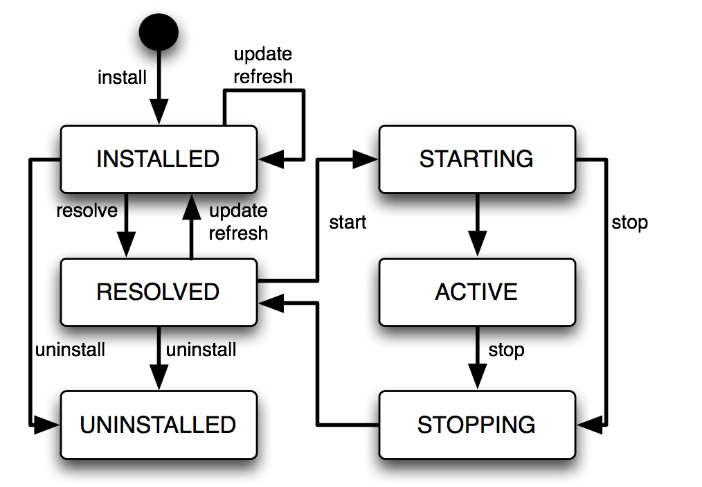

Rob Harrop
Paul Kuzan
Sam Brannen
Paul Harris
Christopher Frost
Ben Hale
Glyn Normington
Juliet Shackell
Steve Powell
Violeta Georgieva
Hristo Iliev
Borislav Kapukaranov
Florian Waibel
Eclipse Virgo
3.7.0.RC01
Copyright © 2009, 2011 VMware Inc. and others
Contributors:
-
VMware Inc. - initial contribution and subsequent updates
-
Violeta Georgieva, SAP AG - Apache Tomcat configuration
-
Hristo Iliev, SAP AG - Setting jmx.properties permissions
-
Borislav Kapukaranov, SAP AG - Configuring framework extensions and fragments on system bundle; Added Virgo Nano references and tips
Introduction
This User Guide covers the Virgo for Apache Tomcat (VTS), the Virgo Jetty Server (VJS) and the Virgo Kernel (VK), although it emphasises the VTS since that is likely to apply to more users.
A Note for Virgo Kernel Users
Virgo Kernel users can be reassured that the majority of the information in this Guide is directly applicable to the Virgo Kernel and they can simply ignore the web-related sections.
A Note for Virgo Jetty Server Users
Virgo Jetty Server users can be reassured that the majority of the information in this Guide is directly applicable to the Virgo Jetty Server and they can simply ignore the Virgo for Apache Tomcat specific sections.
A Note for Virgo Nano Users
Virgo Nano is a bit different than VK and VTS. It is the smallest Virgo offering and takes performance to its limits, almost instantly booting up. Virgo Nano users will find a number of sections in this guide useful but sections that refer to plans, PARs and configuration deployment, regions, application scoping and libraries support are NOT relevant for Virgo Nano or VN and should be ignored. This Virgo distribution relies on p2 for its provisioning, therefore is bound to p2 concepts such as p2 features and update sites. Note also that Virgo Nano includes Gemini.Web as its default web container implementation and uses its default configuration.
Concepts
This chapter introduces some basic concepts that will help you to use Virgo.
Modular Runtimes and Applications
Virgo for Apache Tomcat, Virgo Jetty Server, Virgo Kernel and Virgo Nano are Java runtimes each composed of a collection of modules and supporting applications which are also composed of a collection of modules. Modules can be shared between applications and multiple versions of modules can co-exist.
OSGi Concepts
Modules in Virgo are represented using a standard Java module system known as OSGi. Modules in OSGi are known as bundles. Bundles consist of programs and resources organised by Java package together with metadata which declares imported and exported packages. A bundle exports a package to make the corresponding programs and resources available for use by other bundles. A bundle imports a package to use the corresponding programs and resources of another bundle.
Representing a program as a collection of bundles makes it easier for the programmer to manage it and modify it and for teams of programmers to divide responsibilities between themselves. A bundle is similar to a Java class in this respect. Design principles similar to those for organising data and programs into classes can be applied to organising applications into bundles.
An industry consortium known as the OSGi Alliance develops OSGi specifications, reference implementations, and compliance tests. Virgo is built on the Equinox OSGi framework which is also the reference implementation for the OSGi framework specification.
Bundles
Each bundle is stored in a file which conforms to the JAR file format and
can contain Java classes, a manifest (in META-INF/MANIFEST.MF),
and further resource files.
The OSGi framework enables bundles to be installed and run.
OSGi identifies bundles "by name" and "by identifier" (id).
The symbolic name and
version of a bundle are attributes of the bundle which identify the bundle.
A bundle declares its symbolic name and version
in its manifest (a file called MANIFEST.MF) like this:
Bundle-SymbolicName: org.foo.bundle
Bundle-Version: 1.2.3.BUILD-2009-06-04Additionally, the OSGi framework
assigns a distinct number, known as a bundle id, to each bundle
as it is installed. Bundles may be referred to "by identifier" using this number.
The OSGi framework itself resides in a
bundle with bundle id 0.
The dependencies between bundles are expressed statically in terms of packages and
dynamically in terms of services. A package is familiar to Java programmers.
For example, a Java program may depend on a class org.foo.X,
from package org.foo, and a bundle
containing that program
would either need to contain org.foo.X or depend on the
package org.foo.
Package dependencies are specified in the bundle manifest, for example:
Import-Package: org.fooA bundle which provides a package for use by other bundles must export the package in its manifest. For example:
Export-Package: org.fooThe OSGi framework ensures that a given bundle’s package dependencies can be satisfied before the bundle runs. This process is known as resolution.
After a bundle is resolved, its classes and resources are available for loading. In OSGi, bundles and their packages do not appear on the application classpath. Instead, each bundle has a class loader which loads its own classes and loads classes belonging to each of its imported packages by deferring to the bundle class loader that exports the package.
Life Cycle
The OSGi framework manages the life cycle of each bundle. A bundle is first of all installed and will be in the INSTALLED state. If a request is made to start the bundle, the OSGi framework resolves the bundle and, if resolution was successful, will subsequently move the bundle to the ACTIVE state. If a request is made to stop the bundle, the OSGi framework will move the bundle back to the RESOLVED state. A request may then be made to uninstall the bundle.
While the bundle is INSTALLED, ACTIVE or RESOLVED, it may be updated to pick up some changes. These changes are not detected by bundles which were depending on the bundle before it was updated. A "refresh packages" operation may be performed to ripple the changes out to those bundles. (See Services concepts.) The life cycle of a bundle can be summarised by a state transition diagram. This diagram shows some more of the intermediate states of a bundle not described in the overview above:

Services
Bundles may publish Java objects, known as services, to a registry managed by the OSGi framework. Other bundles running in the same OSGi framework can then find and use those services. Services are typically instances of some shared Java interface. A bundle which provides a service need not then export the package containing the implementation class of the service.
For example, a bundle could export a package containing the interface
org.bar.SomeInterface, thus:
Export-Package: org.bar…implement the interface with a class SomeImpl:
package org.bar.impl;
class SomeImpl implements SomeInterface {
…
}…create an instance of SomeImpl and
then publish this instance (as an instance of the interface SomeInterface).
An OSGi framework publishes a number of standard services. For example, the Package Admin service provides the "refresh packages" life cycle operation mentioned above.
OSGi provides an API which can be used to publish and find services, but it is much simpler to use Blueprint to accomplish this. (See Gemini Blueprint.)
Versioning
OSGi allows different versions of bundles, packages, and several other entities, to co-exist in the same framework and provides some mechanisms for managing these versions.
Version Numbers
An OSGi version number consists of up to three numeric components, or exactly three numeric components followed by a string component. These components are separated by a period (“.”) and are called the major, minor, micro, and qualifier components, respectively.
For example, the version 2.4.1.ga has major component 2, minor component
4, micro component 1,
and a qualifier component ga. (There are restrictions on the characters that can appear in
a qualifier. For example: letters, digits, underscores and hyphens are allowed; periods and commas are not.)
Trailing components may be omitted along with their period (.). So, for example, the version
numbers 2, 2.0, and 2.0.0
all denote the same version. This example demonstrates that 0 is assumed if a numeric component is omitted,
and the empty string is assumed for an omitted qualifier.
Version Ranges
Dependencies on bundles and packages have an associated version range which is specified using an interval notation: a square bracket “[” or “]” denotes an inclusive end of the range and a round bracket “(” or “)” denotes an exclusive end of the range. Where one end of the range is to be included and the other excluded, it is permitted to pair a round bracket with a square bracket. The examples below make this clear.
If a single version number is used where a version range is required this does not indicate a single version, but the range starting from that version and including all higher versions.
There are three common cases:
-
A "strict" version range, such as
[1.2,1.2], which denotes that version and only that version. -
A "half-open" range, such as
[1.2,2), which has an inclusive lower limit and an exclusive upper limit, denoting version1.2.0and any version after this, up to, but not including, version2.0.0. -
An "unbounded" version range, such as
1.2, which denotes version1.2and all later versions.
Versioning Policies
A versioning policy is a way of using version numbers to indicate compatible and incompatible changes. OSGi does not mandate a particular versioning policy. Instead, a specific versioning policy may be implemented using version ranges. Strict and half-open version ranges are most useful in representing versioning policies. Unbounded version ranges can lead to problems as they (unrealistically) assume that compatibility will be preserved indefinitely.
For example, a conservative versioning policy might assume that any change, other than
in the qualifier component of a version, implies an incompatible
change to the object.
Such a policy would employ version ranges such as [1.2.1.beta,1.2.2)
which accept any version from 1.2.1.beta (inclusive) up to but not including
1.2.2 (exclusive).
Alternatively, a relaxed versioning policy might assume that only changes in the major component of
a version denote an incompatible change.
Such a policy would employ version ranges such as [1.2,2) to capture this.
The OSGi Alliance has published a Semantic Versioning white paper which provides some recommendations and guidance on versioning policies.
Bundle Version
Each bundle has a version.
The bundle’s version may be specified in the manifest using a
Bundle-Version header:
Bundle-Version: 1.4.3.BUILD-20090302
If not specified the bundle version is assumed to be 0.
Package Version
Each exported package has a version. The exported package’s version may be specified on the Export-Package manifest header. For example
Export-Package: org.foo;version="2.9",org.bar;version="1"
exports two packages: org.foo, at version 2.9.0 and
org.bar, at version 1.0.0.
If the version attribute is omitted, the version is assumed to be 0.
Each package import has a version range.
The package import version range may be specified on the Import-Package manifest header.
If interval notation is used, the version range must be enclosed in double quotes, for example:
Import-Package: org.foo;version="[2,3)",org.bar;version="[1,1]"</programlisting>
seeks to import a package org.foo in the range [2.0.0,3.0.0) and a package
org.bar with the (exact) version 1.0.0.
If a version range is not specified on an import, the range 0 is assumed, meaning that
any version of this package would satisfy the import.
Bundle Manifest Version
Bundle manifests have a version which is 1 by default,
indicating OSGi Release 3 semantics.
Virgo is based on OSGi Release 4 and therefore expects bundle manifests to be
at version 2, indicating OSGi Release 4 semantics.
The bundle manifest’s version should be specified on the Bundle-ManifestVersion manifest header, exactly as follows:
Bundle-ManifestVersion: 2
Manifest Version
Manifests themselves also have a version which must be specified as 1.0.
This is not an OSGi definition but part of the
(JAR file specification).
Manifest-Version: 1.0
Blueprint Concepts
Spring DM (the predecessor of Gemini Bluprint) is a project which enables services to be published and consumed using descriptions written in XML.
The XML descriptions reside in files with extension .xml in the
bundle’s META-INF/spring sub-directory.
To publish a service, an <osgi:service> tag is used, specifying the
implementation class of the service and the interface class to be used.
Spring DM constructs an instance of the implementation class and
publishes that instance in the OSGi service registry under the interface when the bundle is started.
To consume a service, an <osgi:reference> tag is used and the
service may be passed into other Spring beans using Spring’s dependency
injection facilities.
Spring DM automatically creates proxies for OSGi services so that the actual service object may come and go at runtime. If a service disappears, any proxies to the service will wait for the service to re-appear. This effect is known as damping.
When a bundle is started, Spring DM builds the application contexts specified by the XML descriptions, creates proxies for the specified services, and publishes the specified services to the OSGi service registry.
When a bundle is stopped, Spring DM retracts any services it published on behalf of the bundle and closes the bundle’s application contexts. Virgo turns off damping of a service proxy while the proxy’s application context is being closed.
Spring DM was contributed to Eclipse as the Gemini Blueprint project. Virgo has Gemini Blueprint built-in.
Gemini Blueprint supports both Spring DM and Blueprint programming models. Blueprint, known formally as the "OSGi Blueprint Container", provides some of the basic facilities of Spring DM, including all those just mentioned, but in an OSGi standard form. See Further Reading for the Blueprint specification.
Virgo Concepts
|
Note
|
This section is not relevant for Virgo Nano. |
The Provisioning Repository
The Virgo provisioning repository contains artifacts and metadata indexed by the artifact type, name, and version. There are three kinds of repository: external, watched, and remote. Repositories are passive in the sense that changes to repository content do not cause artifacts to be deployed into Virgo, refreshed, or undeployed.
Artifact Types
In addition to the standard OSGi bundle, artifact types in Virgo include configuration (properties file), PAR, plan, and library. PARs, plans, and libraries are discussed in Grouping Bundles.
External Repositories
External repositories are created by scanning a directory which contains artifacts, possibly in nested directories. The repository configuration specifies a pattern which says which files should be treated as artifacts. After the repository is created, changes to the directory do not affect the repository content.
Virgo’s default repository configuration, in configuration/org.eclipse.virgo.repository.properties, specifies an external repository created from the
repository/ext directory.
Watched Repositories
Watched repositories are created by scanning a directory which contains artifacts but no nested directories. All files in the directory are treated as artifacts. The directory is re-scanned periodically and the interval between re-scans is specified in the repository configuration. The directory is also re-scanned when an artifact is deployed into Virgo. Changes detected by re-scanning are reflected in the repository content. Note that changing the content of a watched repository does not cause artifacts to be deployed into Virgo, refreshed, or undeployed.
Virgo’s default repository configuration specifies a watched repository based on the contents of the repository/usr directory.
Remote Repositories
A remote repository refers to a repository hosted by a Virgo instance sometimes known as a repository server.
The hosted repository is configured using the file configuration/org.eclipse.virgo.apps.repository.properties and may be either an external or a watched
repository.
The remote repository is accessed by a Virgo instance sometimes known as a repository client. The repository client is normally a different instance of Virgo to the instance hosting the repository, but it can be the same instance (which is handy for testing). The remote repository periodically downloads its index from the hosted repository. The period between downloads may be configured in the repository configuration. The remote repository also caches artifacts which have secure hashes associated with them in the hosted repository. Only bundles currently have secure hashes associated with them. The secure hash is used to determine when a cached artifact is stale and needs to be freshly downloaded.
Repository Chains
The Virgo repository is configured as a chain of external, watched, and remote repositories. The chain is a list which is searched in the configured order. The effect of this search order is that an artifact with a given type, name, and version which appears in more than one repository in the chain is only accessed from the first repository in the chain in which it appears. Abstractly, the repository chain behaves as a single repository, but its content may mutate in quite a different way to the content of an individual external, watched, or remote repository.
Grouping Bundles
Virgo provides a way of grouping together a collection of OSGi bundles and other artifacts which comprise a single application. These artifacts are placed in a JAR file with extension “.par”. This is called a PAR file.
All the bundles in a PAR file are resolved together and so mutual dependencies are permitted.
At runtime a PAR file provides a scope in the sense that bundles inside the PAR file may depend on packages and services outside the PAR file, but bundles outside the PAR file may not depend on packages and services provided by the PAR file.
Virgo also provides the plan artifact as another way of grouping bundles and other artifacts into an application. A plan is a file (in XML format) listing a collection of artifacts. The artifacts referred to by a plan reside in the Virgo provisioning repository.
In addition to PARs and plans, which are used for deploying groups of artifacts, Virgo provides libraries as a way of grouping together a collection
of bundles that can then be imported into an application using the Virgo-specific Import-Library manifes header.
Kernel and User Region
Conceptually, VTS can be divided into two separate subsystems, one of which actually encompases the other:
-
The kernel, which is the heart of VTS. It makes up most of VTS, except for the part that supports Web applications. In other words, the kernel provides full OSGi modular support for your applications, as long as they are not Web-based. See The Virgo Kernel for additional information.
-
The user region is the subsystem that manages user applications. It deliberately isolates the kernel from both your applications and those of the VTS itself, such as the Admin Console, which protects the kernel from interference by applications. See The User Region for additional information.
When you download and install Virgo for Apache Tomcat you get both the kernel and web server support (configured in the user region). You can also download and use the kernel on its own if you do not plan on deploying Web applications or using the web-based Admin Console and you’ll get the kernel and a minimal user region (with no web support).
The following graphic shows how the kernel and user region make up VTS:
The Virgo Kernel
The Virgo Kernel encapsulates almost all of VTS except for the deployment of Web applications. In sum, the kernel provides the following VTS features:
-
Deployment of non-Web artifacts, such as OSGi bundles, PARs, plans, and configuration artifacts.
-
Local and hosted repositories
-
Scoping
-
Hot deployment
-
User region
-
Auto-provisioning
-
System and application tracing and dump support
-
Spring beans and Blueprint support
See Configuring VTS for details about configuring the kernel to better suit your environment.
The User Region
The user region isolates the kernel from deployed applications, including both your own user applications and the user-oriented VTS applications such as the Admin Console. This means that the kernel is mostly invisible to applications and to application management. This is because most of the kernel bundles are not installed in the user region (apart from a few needed for region management). The necessary function to support the kernel runs in the OSGi framework, but the user region applications cannot see it, except for the services that are normally offered.
This isolation has many benefits. For example, it is not necessary for the kernel and user applications to use the same version of the Spring Framework. In fact the kernel installs only those parts of the Spring Framework that it needs. If you update the kernel, it is far less likely that you will also need to upgrade or adjust the applications to accomodate a new version of the kernel. The kernel implementation is therefore much more stable and resilient and applications are much more likely to survive kernel upgrades between releases. When you install VTS, the kernel creates a single user region. The kernel and the user region are configured independently of each other; see Configuring VTS for details.
Finally, the isolation provided by the user region together with scoped applications and plans solve common dependency problems that occur when using OSGi.
p2 Concepts
At EclipseCon 2011 there was a great introductory presentation on p2. It gives a nice overview of the whole provisioning system. You can find it recorded here(video).
This blog post provides some background on why p2 was created as well as a brief overview of what p2 repositories are and how this relates to a runtime.
This presentation(slides only) sheds light on more advanced p2 features and turns our attention to its extension points.
Finally, the p2 wiki also provides both getting started guides as well as information on more advanced features.
Using the p2 director
Prerequisites
The Virgo for Apache Tomcat, or VTS for short, requires Java SE 6 or later to be installed. Java is available from http://www.java.com/ and elsewhere.
Since you’re going to use the p2 director you’ll need to get it. The easiest way is to download Eclipse from here. It has built-in p2 director and other p2 applications.
|
Important
|
Setting the Target Platform |
Before using the director make sure you have a proper target platform set. Otherwise you may not see the director application. Here’s how to do that: Go to Eclipse’s Preferences→Plug-in Development→Target Platform. Below is shown how the view looks like when a default target platform is set.
If for some reason you don’t have any target platform set or it’s not the default one you must set the default target platform from the image above. If the default target platform is missing then add a new one via the Add… button and select the Default radio button as shown below:
You can now click Next and then Finish.
Installing with the p2 director from Eclipse
This section covers briefly using the p2 director for installing. A helpful page is the p2 director’s documentation at help.eclipse.org. There you can find more information on the different supported arguments.
Here’s how to use the GUI version of the director built-in Eclipse.
-
Go to the Run context menu and select Run Configurations
-
Create a new one and choose the director application as shown below, then switch to the Arguments tab
|
Important
|
In the image below the "Location:" text box’s value is managed by your IDE, don’t type anything in there. |
In the Program Arguments section append the director arguments. Here’s an example I used:
-repository <yourP2repo>
-installIU nano.product
-tag InitialState
-destination /Users/<youruser>/install/virgo
-profile VirgoProfile
-roaming
-p2.os ${target.os}
-p2.ws ${target.ws}
-p2.arch ${target.arch}
|
Important
|
The -repository argument accepts any valid p2 repository. The -destination argument accepts any valid absolute location. It defines the location where your Virgo installation will be provisioned. If the directory does not exist, it will be created by the director. |
These arguments produce a Virgo Nano installation. For the p2.* arguments use the same properties from the example above. Eclipse will substitute them later with real values.
The passed value for -installIU determines which Virgo product is going to be installed. Here’s a list of all Virgo product install IUs: nano.product - Virgo Nano nano-full.product - Virgo Nano Full (VN ` p2 ` GW) kernel.product - Virgo Kernel tomcat-server.product - Virgo for Apache Tomcat jetty-server.product - Virgo Jetty Server
Finally, run the created configuration. You should see the following output in Eclipse’s Console
Installing Virgo for Apache Tomcat
Prerequisites
The Virgo for Apache Tomcat, or VTS for short, requires Java SE 6 or later to be installed. Java is available from http://www.java.com/ and elsewhere.
In case you are installing via a p2 director you’ll need to get it. The easiest way is to download Eclipse from here. It has built-in p2 director and other p2 applications.
Installing from the ZIP Download
Downloading the ZIP file
Virgo for Apache Tomcat is distributed as a ZIP file. This can be downloaded from here.
Installing
Linux
To install Virgo for Apache Tomcat on Linux, unzip the distribution package to the desired installation directory.
For example, to install into /opt:
$ unzip virgo-web-server-{version}.zip -d /opt
This creates a directory called virgo-web-server-3.7.0.RC01 under /opt.
Virgo for Apache Tomcat requires write access to the installation directory, in this case /opt/virgo-web-server-3.7.0.RC01.
Typically this means it must be run as the user that installed it, or the installation directory’s ownership must be changed.
Microsoft Windows
To install the Virgo for Apache Tomcat on Windows, unzip the distribution package to the desired installation directory. You should use a zip application such as 7zip, not the built-in folder decompression. Note that both Windows and Java have some issues with long file names and file paths, so we recommend installing to the root directory of your chosen drive.
Installing from an update site
The repository location
Virgo has a single p2 repository that contains all Virgo distributions. The repository for version 3.7.0.RC01 can be found {p2repo}[here]. There is a repository for each released version.
Using the p2 director
As shown in Installing with the p2 director from Eclipse you can easily install VTS in a desired destination. The only director argument that needs to be adjusted is -installIU.
For VTS the right value is tomcat-server.product.
Post-installation steps
Set environment variable variables
JAVA_HOME
Virgo for Apache Tomcat uses the JAVA_HOME environment variable to locate the java
executable. Configure this environment variable to point to the home directory of the Java 6 installation on your computer.
SERVER_HOME
As a convenience it is recommended that you create an environment variable that points
to the Virgo for Apache Tomcat installation directory. Note that the Virgo for Apache Tomcat does not require that
such an environment variable has been set. This variable may have any name of your
choosing. The Virgo for Apache Tomcat’s documentation assumes that the variable is named
SERVER_HOME.
Linux
Edit the .profile file in your home directory to
add the SERVER_HOME and JAVA_HOME environment variables. For
example, if you installed into /opt:
$ export SERVER_HOME=/opt/virgo-web-server-{version}/
$ export JAVA_HOME=/user/java/jdk1.6.0_17
$ export PATH=$JAVA_HOME/bin:$PATH
To verify the setting of JAVA_HOME, issue the command $JAVA_HOME/bin/java -version from a new terminal window
and ensure that the command completes successfully and reports
a Java version 1.6.x (denoting Java 6) or greater.
Microsoft Windows
This section shows how to add SERVER_HOME as a system variable on Windows. Follow the same procedure to add or update the JAVA_HOME environment variable.
From the Start menu, open the Control Panel and double-click on ‘System'.
Click the 'Advanced' tab and select 'Environment Variables'. Next, click the 'New' button in the 'System Variables' section.
This will display the ‘New System Variable' window. Enter
SERVER_HOME as the ‘Variable name' and
the installation directory as the ‘Variable value'. Click OK.

To verify the setting of JAVA_HOME, issue the command "%JAVA_HOME%"\bin\java -version from
a new command prompt and ensure that the command completes successfully and reports
a Java version 1.6.x (denoting Java 6) or greater.
Microsoft Windows - Troubleshooting Security Permissions
When starting Virgo for Apache Tomcat on some variants of Windows you might encounter a problem with file permissions. The error looks like this.
WARNING: jmxPermissions.vbs did not update the permissions of C:\virgo\configuration\org.eclipse.virgo.kernel.jmxremote.access.properties. Check the file has the correct permissions.</screen>
If VTS starts correctly (see [starting-stopping]) you can skip this section and carry on. However to secure your installation you have to set correct permissions. To do so, go to the ‘configuration' directory of the installation in Windows Explorer.
Right click on the 'org.eclipse.virgo.kernel.jmxremote.access.properties' file and view its properties, then select the 'Security' tab. Remove all groups and users from the list and select 'Apply'.
Within the security page select the ‘Advanced' options. On the ‘Owner' tab, choose the owner that you are trying to run the VTS as and select ‘Apply'.
Once this is done select ‘OK' to return to the ‘Security' tab and now add the owner to the list of groups and users that have permission to access the file.
Once all these steps are complete you can proceed to start the VTS.
C:\dev\virgo-web-server-{version}>bin\startup.bat
[2009-12-08 13:09:09.545] startup-tracker <KE0001I> Kernel starting.
Installing Virgo Kernel
Prerequisites
The Virgo Kernel, or VK for short, requires Java SE 6 or later to be installed. Java is available from http://www.java.com/ and elsewhere.
anchor:kernel-installation-zip
Installing from the ZIP Download
Downloading the ZIP file
Virgo Kernel is distributed as a ZIP file. This can be downloaded from here.
anchor:kernel-installation-zip-installing
Installing
Linux
To install the Virgo Kernel on Linux, unzip the distribution package to the desired installation directory.
For example, to install into /opt:
$ unzip virgo-kernel-{version}.zip -d /opt
This creates a directory called virgo-kernel-3.7.0.RC01 under /opt.
Virgo Kernel requires write access to the installation directory, in this case /opt/virgo-kernel-3.7.0.RC01.
Typically this means it must be run as the user that installed it, or the installation directory’s ownership must be changed.
Microsoft Windows
To install the Virgo Kernel on Windows, unzip the distribution package to the desired installation directory. You should use a zip application such as 7zip, not the built-in folder decompression. Note that both Windows and Java have some issues with long file names and file paths, so we recommend installing to the root directory of your chosen drive.
Installing from an update site
The repository location
Virgo has a single p2 repository that contains all Virgo distributions. The repository for version 3.7.0.RC01 can be found {p2repo}[here]. There is a repository for each released version.
Using the p2 director
As shown in Installing with the p2 director from Eclipse you can easily install VK in a desired destination. The only director argument that needs to be adjusted is -installIU.
For VK the right value is kernel.product.
Installing Virgo Nano
Prerequisites
The Virgo Nano, or VN for short, requires Java SE 6 or later to be installed. Java is available from http://www.java.com/ and elsewhere.
Installing from the ZIP Download
Installing
Linux
To install the Virgo Nano on Linux, unzip the distribution package to the desired installation directory.
For example, to install into /opt:
$ unzip virgo-nano-{version}.zip -d /opt
This creates a directory called virgo-nano-3.7.0.RC01 under /opt.
Virgo Nano requires write access to the installation directory, in this case /opt/virgo-nano-3.7.0.RC01.
Typically this means it must be run as the user that installed it, or the installation directory’s ownership must be changed.
Microsoft Windows
To install the Virgo Nano on Windows, unzip the distribution package to the desired installation directory. You should use a zip application such as 7zip, not the built-in folder decompression. Note that both Windows and Java have some issues with long file names and file paths, so we recommend installing to the root directory of your chosen drive.
Installing from an update site
The repository location
Virgo has a single p2 repository that contains all Virgo distributions. The repository for version 3.7.0.RC01 can be found {p2repo}[here]. There is a repository for each released version.
Using the p2 director
As shown in Installing with the p2 director from Eclipse you can easily install VN in a desired destination. The only director argument that needs to be adjusted is -installIU.
For VN the right value is nano.product.
Starting and Stopping Virgo for Apache Tomcat
Starting and Stopping VTS
Starting Virgo for Apache Tomcat
To start Virgo for Apache Tomcat run the startup.sh (Linux) or startup.bat (Windows) script.
For both platforms, the script is located in the SERVER_HOME/bin directory.
|
Note
|
This chapter applies to Virgo Nano too. Note that since VN has a single region you can ignore the console output from the user region and focus on the instructions. A successful startup of VN is as simple as that: [2011-12-28 11:41:31.528] startup-tracker <KE0001I> Kernel starting. [2011-12-28 11:41:31.602] startup-tracker <KE0002I> Kernel started. |
Linux
To start Virgo for Apache Tomcat, open a terminal window and run startup.sh:
$ cd $SERVER_HOME $ bin/startup.sh</screen>
Once Virgo for Apache Tomcat has started, the console will display a log message similar to the one shown below, along with other status messages:
[2009-11-30 12:12:12.111] Thread-2 <UR0001I> User region ready.
The preceding message indicates that you can start using VTS.
Microsoft Windows
To start Virgo for Apache Tomcat, open a command-window and run startup.bat:
c:> cd %SERVER_HOME% c:> bin\startup.bat</screen>
Once Virgo for Apache Tomcat has started, the console will display a log message similar to the one shown below, along with other status messages:
[2009-11-30 12:12:12.111] Thread-2 <UR0001I> User region ready.
The preceding message indicates that you can start using VTS.
Starting in Clean Mode
When you start Virgo for Apache Tomcat in clean mode, the startup script removes the SERVER_HOME/work directory (and hence all
running applications) as well as all trace, log and dump files. It leaves the
SERVER_HOME/repository and SERVER_HOME/pickup directories untouched,
which means that any applications previously hot deployed will be automatically reinstalled.
Linux
To start Virgo for Apache Tomcat in clean mode, open a terminal window and run startup.sh -clean:
$ cd $SERVER_HOME $ bin/startup.sh -clean
Microsoft Windows
To start Virgo for Apache Tomcat in clean mode, open a command window and run startup.bat -clean:
C:> cd %SERVER_HOME% C:> bin\startup.bat -clean
Starting in Debug Mode
Linux
To start Virgo for Apache Tomcat in debug mode, run
startup.sh passing in the
-debug argument:
$ cd $SERVER_HOME $ bin/startup.sh -debug
This will start the debug agent listening on port
8000 which is the default remote debug port used
by Eclipse. To start in debug mode with a specific port number, pass
this in as the value for the -debug argument:
$ cd $SERVER_HOME $ bin/startup.sh -debug 8001
This will start the debug agent listening on port
8001. To start in debug mode and suspend the VM
until a debugger attaches, pass in the -suspend
argument along with the -debug argument:
$ cd $SERVER_HOME $ bin/startup.sh -debug -suspend
This starts the debug agent, but prevents Virgo for Apache Tomcat from actually starting until a debugger attaches to the agent. This can be useful when trying to diagnose problems that occur during startup.
Microsoft Windows
To start Virgo for Apache Tomcat in debug mode, run
startup.bat passing in the
-debug argument:
C:> cd %SERVER_HOME% C:> bin\startup.bat -debug
This will start the debug agent listening on port
8000 which is the default remote debug port used
by Eclipse. To start in debug mode with a specific port number, pass
this in as the value for the -debug argument:
C:> cd %SERVER_HOME% C:> bin\startup.bat -debug 8001
This will start the debug agent listening on port
8001. To start in debug mode and suspend the VM
until a debugger attaches, pass in the -suspend
argument along with the -debug argument:
C:> cd %SERVER_HOME% C:> bin\startup.bat -debug -suspend
This starts the debug agent, but prevents Virgo for Apache Tomcat from actually starting until a debugger attaches to the agent. This can be useful when trying to diagnose problems that occur during startup.
Starting with JMX Access Modifications
The Virgo for Apache Tomcat always starts with JMX access enabled, allowing you to use a management tool such as JConsole
to attach to the Web Server instance.
By default both local access and remote access over SSL with username and password
authentication are provided. The default port for secure JMX access is 9875
and the default username and password are admin and springsource.
Linux
To start Virgo for Apache Tomcat with default JMX access enabled, run startup.sh passing
in no arguments:
$ cd $SERVER_HOME $ bin/startup.sh
To start JConsole, run the jconsole.sh script, located in the bin directory, as shown:
$ cd $SERVER_HOME $ bin/jconsole.sh
The following image shows how to specify a local connection using JConsole.
The following image shows how to specify a remote connection in JConsole that uses SSL with the default
username/password (admin/springsource and default secure port of 9875).
To start with the JMX remote access on a specific port number other than the default 9875,
pass this port number in as the value
of the -jmxport argument:
$ cd $SERVER_HOME $ bin/startup.sh -jmxport 9090
This will start the Virgo for Apache Tomcat with JMX enabled for remote connections on port 9090.

To start the JMX remote access with a custom username and password, update the $SERVER_HOME/configuration/org.eclipse.virgo.kernel.users.properties file. First specify the custom username by changing the value of the role.admin property. Then set the password of this new user by adding a new property called user.username, where username refers to the actual name of the user. Finally, restart VTS for the changes to take effect.
For example, if you want change the JMX remote access username to zebedee with password florence, change the file as follows:
##################
# User definitions
##################
user.zebedee=florence
##################
# Role definitions
##################
role.admin=zebedeeSpecify the custom username in JConsole as shown.
To start the JMX remote access using a custom SSL certificate, edit the file located at
$SERVER_HOME/configuration/keystore. If you wish to use a different keystore,
pass this filename in as the value for the -keystore argument and the keystore
password in as the value for the -keystorePassword argument:
$ cd $SERVER_HOME $ bin/startup.sh -keystore customKeystore -keystorePassword customKeystorePassword
This will start the Virgo for Apache Tomcat with JMX enabled for remote connections using an SSL certificate from
customKeystore with a password of customKeystorePassword.
Microsoft Windows
To start Virgo for Apache Tomcat with default JMX access enabled, run startup.bat passing
in no arguments:
C:> cd %SERVER_HOME% C:> bin\startup.bat
To start JConsole, run the jconsole.bat script, located in the bin directory, as shown:
C:> cd %SERVER_HOME% C:> bin\jconsole.bat
The following image shows how to specify a local connection using JConsole.
The following image shows how to specify a remote connection in JConsole that uses SSL with the default
username/password (admin/springsource and default secure port of 9875).
To start with the JMX remote access on a specific port number other than the default 9875,
pass this port number in as the value of the -jmxport argument:
C:> cd %SERVER_HOME% C:> bin\startup.bat -jmxport 9090
This will start the Virgo for Apache Tomcat with JMX enabled for remote connections on port
9090.
To start the JMX remote access with a custom username and password, update the %SERVER_HOME%\configuration\org.eclipse.virgo.kernel.users.properties file. First specify the custom username by changing the value of the role.admin property. Then set the password of this new user by adding a new property called user.username, where username refers to the actual name of the user. Finally, restart VTS for the changes to take effect.
For example, if you want change the JMX remote access username to zebedee with password florence, change the file as follows:
##################
# User definitions
##################
user.zebedee=florence
##################
# Role definitions
##################
role.admin=zebedeeSpecify the custom username in JConsole as shown.
To start the JMX remote access using a custom SSL certificate, edit the file located at
%SERVER_HOME%\configuration\keystore. If you wish to use a different
keystore, pass this filename in as the value for the -keystore argument and the
keystore password in as the value for the -keystorePassword argument:
C:> cd %SERVER_HOME% C:> bin\startup.bat -keystore customKeystore -keystorePassword customKeystorePassword
This will start the Virgo for Apache Tomcat with JMX enabled for remote attach using an SSL certificate from
customKeystore with a password of customKeystorePassword.
Starting with a Custom Configuration Directory
Use the -configDir option to specify an alternate configuration directory, different from the
default SERVER_HOME/configuration directory. This option allows you to use the same Virgo for Apache Tomcat
installation to run multiple instances of VTS. Simply create a configuration directory for each
instance, specify unique port numbers, logging and tracing directories, and so on, and then specify that directory
when starting VTS.
If you specify a relative path for the -configDir parameter,
the startup script interprets the path as relative to the root of the Virgo for Apache Tomcat installation,
and not relative to the directory from which you execute the startup script.
See Alternate serviceability and work
Directories for a known issue related to specifying an alternate configuration directory.
Linux
To start Virgo for Apache Tomcat using a configuration directory of /configuration/node1:
$ cd $SERVER_HOME $ bin/startup.sh -configDir /configuration/node1
Windows
To start Virgo for Apache Tomcat using a configuration directory of c:\configuration\node1:
C:> cd %SERVER_HOME% C:> bin\startup.bat -configDir c:\configuration\node1
Stopping Virgo for Apache Tomcat
Linux
To stop a running instance of Virgo for Apache Tomcat, start a new terminal window and run the shutdown.sh script:
$ cd $SERVER_HOME $ bin/shutdown.sh
To stop a running instance of Virgo for Apache Tomcat immediately, bypassing normal shutdown
processing, run shutdown.sh with the -immediate option:
$ cd $SERVER_HOME $ bin/shutdown.sh -immediate
If, when you started the Web Server instance, you used the -jmxport option to specify a non-default JMX port number,
then you must pass this port number to the -jmxport of the shutdown.sh script
to gracefully shut it down.
For example, if you specified 9090 as the JMX port, use the following to shut down the Web Server instance:
$ cd $SERVER_HOME $ bin/shutdown.sh -jmxport 9090
Microsoft Windows
To stop a running instance of Virgo for Apache Tomcat, start a new console window and run the shutdown.bat script:
C:> cd %SERVER_HOME% C:> bin\shutdown.bat
To stop a running instance of Virgo for Apache Tomcat immediately, bypassing normal shutdown
processing, run shutdown.bat with the -immediate option:
C:> cd %SERVER_HOME% C:> bin\shutdown.bat -immediate
If, when you started the Web Server instance, you used the -jmxport option to specify a non-default JMX port number,
then you must pass this port number to the -jmxport of the shutdown.bat script to gracefully shut it down.
For example, if you specified 9090 as the JMX port, use the following to shut down the Web Server instance:
C:> cd %SERVER_HOME% C:> bin\shutdown.bat -jmxport 9090
Cleaning Virgo for Apache Tomcat without Starting it
When you clean Virgo for Apache Tomcat, the startup script removes the SERVER_HOME/work directory (and hence all
running applications) as well as all trace, log and dump files. It leaves the
SERVER_HOME/repository and SERVER_HOME/pickup directories untouched,
which means that any applications previously hot deployed will be automatically reinstalled next time the Web Server is started.
Cleaning is useful when you want to start the Web Server from a clean state next time, but you don’t want to start the Web Server yet.
Cleaning is also useful for tidying up the directory structure. For example, sometimes Microsoft Windows won’t let you delete the Web Server installation directory. See Problem Deleting Installation Directory under Windows for more details.
Linux
To clean Virgo for Apache Tomcat, open a terminal window and run startup.sh -clean -noStart:
$ cd $SERVER_HOME $ bin/startup.sh -clean -noStart
Using Equinox Launcher
Since version 3.5 Virgo uses the standard Equinox Launcher as its default launcher. As a result in addition to all the launcher options described so far users can also pass arguments specific to the Equinox launcher.
|
Important
|
The Equinox Launcher arguments must be placed at the end of the startup call. Here’s an example $ ./startup.sh "virgo-args" "equinox-launcher-args" $ ./startup.sh -clean -console 2222</screen> |
A full list of the accepted Equinox Launcher arguments is available at help.eclipse.org.
Equinox Console
Enabling the Equinox Console
Shells are provided for both user region and kernel, although they are disabled by default and need enabling before they can be used.
The user region shell ports may be reconfigured by editing the file
osgi.console.properties in the repository/ext directory, and
then restarting Virgo. The telnet properties in the file are prefixed with telnet., and the ssh properties are prefixed with ssh..
The kernel shell ports may be reconfigured by editing the file osgi.console.properties in the configuration directory, and then restarting Virgo.
To enable any of these shell ports, change the enabled setting from false to true
enabled=truein the corresponding properties files.
If you wish to change a port, any free port can be used, but the usual defaults are, for telnet, 2501 for the user region and 2401 for the kernel, and for ssh, 2502 for the user region and 2402 for the kernel.
Access is via ssh or telnet. The simplest way to access the shell is via telnet to port 2501 or 2401 for user region or kernel, respectively.
$ telnet localhost 2501 Trying ::1... Connected to localhost. Escape character is '^]'. osgi>
Alternatively, you can ssh to port 2502 or 2402 for user region or kernel, respectively.
The users and passwords for ssh are configured in configuration/org.eclipse.virgo.kernel.users.properties as described
in Configuring Authentication. The default user and password are admin
and admin.
|
Note
|
Currently the Virgo Nano Equinox Console is enabled by default. Telnet is accesible on 2401 and SSH on 2402. In future these will be configurable. |
|
Note
|
If you use the |
Using Virgo Shell Commands
|
Note
|
This section is not applicable to Virgo Nano. |
Virgo provides shell commands that allow you to examine artifacts currently installed in a particular Virgo Kernel instance, manage the lifecycle of the installed artifacts, install new artifacts, and shut down the Virgo Kernel. You can install, examine, and manage the lifecycle of the following artifacts:
-
Bundles
-
Configuration Artifacts
-
PARs
-
Plans
and can examine:
-
Exported packages
-
Services in the OSGi service registry
Virgo also provides shell commands to list all bundles that contain, export, or load a particular class.
These commands are provided for the user region shells only and are grouped together in
the vsh scope.
You invoke commands using the vsh: scope. For example:
osgi> vsh:plan list Name Version State org.eclipse.virgo.apps.admin.plan 2.1.0 ACTIVE org.eclipse.virgo.kernel.userregion.springdm 2.1.0 ACTIVE org.eclipse.virgo.web 2.1.0 ACTIVE
Virgo Shell Commands
The following table lists the Virgo shell commands; each command in turn has a variety of options that you can specify, depending on what you want to do, such as start a bundle or refresh a plan. The reference documentation about each command provides the full list of available options.
| Command | Description |
|---|---|
Manages and displays information about bundle artifacts. |
|
Lists all bundles that <emphasis role="bold">contain* a class or resource. |
|
Lists all bundles that <emphasis role="bold">export* a class or package. |
|
Lists all bundles that can <emphasis role="bold">load* a class. |
|
Manages and displays information about configuration artifacts. |
|
Displays information about exported packages. |
|
Manages and displays information about PAR artifacts. |
|
Manages and displays information about plan artifacts. |
|
Displays information about services in the OSGi service registry. |
|
Installs an artifact to Virgo Kernel. |
|
Shuts down the Virgo Kernel instance to which the Equinox Console is connected. |
Virgo Shell Command Reference
This section contains reference information about the Virgo shell commands
bundle, clhas, clexport, clload, config, packages, par, plan, service, install, shutdown, help and exit.
bundle Command
Use the bundle command to manage the lifecycle of bundles deployed in Virgo Kernel and to gather information about deployed bundles, such as diagnostic information, header information, and so on.
The following table lists the options you can specify for this command.
| Option | Description |
|---|---|
list |
Displays the list of bundles that are currently installed in the current Virgo Kernel instance. With the exception of a few kernel bundles and their services, which Virgo Kernel uses to administer the user region, none of the kernel is visible to user installed artifacts; rather, only the bundles installed in the user region are visible.
Each bundle is identified by an internal |
examine id |
Displays detailed information about the specified bundle. Use the |
start id |
Starts the specified bundle. Use the |
stop id |
Stops the specified bundle. Use the |
refresh id |
Updates the contents of the specified bundle. Use the |
uninstall id |
Uninstalls the specified bundle from Virgo Kernel. Use the |
diag id |
Provides diagnostic information about the specified bundle.
In particular, this command displays information about the imported packages that Virgo Kernel could not resolve.
Use the |
headers id |
Displays the complete list of manifest headers of the specified bundle. Use the |
The following examples show how to use this command.
First, use the bundle list command to view all the installed bundles:
osgi> vsh:bundle list Id Name Version State 40 org.eclipse.virgo.kernel.userregionfactory 3.0.0.RELEASE ACTIVE 47 org.eclipse.equinox.cm 1.0.300.v20101204 ACTIVE 48 org.eclipse.virgo.kernel.userregion 3.0.0.RELEASE ACTIVE 49 org.eclipse.virgo.kernel.osgicommand 3.0.0.RELEASE ACTIVE 50 org.eclipse.osgi.services 3.3.0.v20110110 ACTIVE 51 com.springsource.org.apache.mina.core 2.0.2 ACTIVE 52 org.apache.felix.gogo.command 0.8.0.v201105062003 ACTIVE 53 org.apache.felix.gogo.runtime 0.8.0.v201105062003 ACTIVE 54 org.apache.felix.gogo.shell 0.8.0.v201107131313 ACTIVE 55 org.eclipse.equinox.console.supportability 1.0.0.20110722-2 ACTIVE 56 com.springsource.org.apache.sshd.core 0.5.0 ACTIVE 57 org.springframework.osgi.core 1.2.1 ACTIVE 58 S org.springframework.osgi.extender 1.2.1 ACTIVE 59 org.springframework.osgi.io 1.2.1 ACTIVE 60 org.eclipse.virgo.kernel.agent.dm 3.0.0.RELEASE ACTIVE 61 S org.eclipse.virgo.kernel.deployer.dm 3.0.0.RELEASE ACTIVE 62 org.eclipse.equinox.ds 1.3.0.v20110124-0830 ACTIVE 63 org.eclipse.equinox.util 1.0.200.v20100503 ACTIVE 64 com.springsource.org.aopalliance 1.0.0 ACTIVE 65 org.eclipse.virgo.kernel.dmfragment 3.0.0.RELEASE RESOLVED 66 org.springframework.aop 3.0.5.RELEASE ACTIVE 67 org.springframework.asm 3.0.5.RELEASE ACTIVE 68 org.springframework.beans 3.0.5.RELEASE ACTIVE 69 org.springframework.context 3.0.5.RELEASE ACTIVE 70 org.springframework.core 3.0.5.RELEASE ACTIVE 71 org.springframework.expression 3.0.5.RELEASE ACTIVE
The following example shows how to view the headers of the org.springframework.osgi.extender bundle (only the first few lines are shown):
osgi> vsh:bundle examine 5
Id: 5
Name: org.springframework.osgi.extender
Version 1.2.1
State: ACTIVE
Spring Powered: true
Bundle Location: file:<... omitted ...>/org.springframework.osgi.extender-1.2.1.jar/
Imported Packages:
org.springframework.osgi.context [1.2.1, 1.2.1]
exported by org.springframework.osgi.core 1.2.1 [4]
<... remainder omitted ...>
Exported Packages:
org.springframework.osgi.extender 1.2.1
<... remainder omitted ...>
Published services:
58 org.springframework.beans.factory.xml.NamespaceHandlerResolver
consumed by org.springframework.osgi.extender 1.2.1 [5]
consumed by org.eclipse.virgo.kernel.deployer.dm 2.1.0.RELEASE [8]
<... remainder omitted ...>
Consumed services:
1 org.osgi.service.packageadmin.PackageAdmin
published by org.eclipse.osgi 3.7.0.v20110224 [0]
<... remainder omitted ...>
Fragments:
org.eclipse.virgo.kernel.dmfragment 2.1.0.RELEASE [10]
config Command
Use the config command to view and manage the configuration artifacts that have been installed in Virgo Kernel. A configuration artifact is simply a properties file that is associated with a user application that is contained in a bundle. Using configuration artifacts, you can manage the configuration of a user application completely separately from the bundle that contains the application.
The following table lists the options you can specify for this command.
| Option | Description |
|---|---|
list |
Lists the configuration artifacts that are currently installed in Virgo Kernel.
The |
examine name [version] |
Displays information about the specified configuration artifact. Although you must specify the name of the configuration artifact, its version is optional unless you have multiple versions of the configuration artifact installed. Use the |
start name [version] |
Starts the specified configuration artifact and makes it visible to Virgo Kernel.
Although you must specify the name of the configuration artifact, its version is optional unless you have multiple versions of the
configuration artifact installed (which Virgo does not currently support).
Use the |
stop name [version] |
Stops the specified configuration artifact and makes it invisible to Virgo Kernel. Although you must specify the name of the configuration artifact, its version is optional unless you have multiple versions of the configuration artifact installed (which Virgo does not currently support). Use the |
refresh name [version] |
Updates the contents of the specified configuration artifact to Virgo Kernel. Although you must specify the name of the configuration artifact, its version is optional unless you have multiple versions of the configuration artifact installed (which Virgo does not currently support). Use the |
uninstall name [version] |
Uninstalls the specified configuration artifact and make it completely unavailable to Virgo Kernel. Although you must specify the name of the configuration artifact, its version is optional unless you have multiple versions of the configuration artifact installed (which Virgo does not currently support). Use the |
The following example shows how to use this command to list the installed configuration artifacts.
osgi> vsh:config list Name Version State org.eclipse.virgo.kernel 0.0.0 ACTIVE org.eclipse.virgo.kernel.jmxremote.access 0.0.0 ACTIVE org.eclipse.virgo.kernel.userregion 0.0.0 ACTIVE org.eclipse.virgo.kernel.users 0.0.0 ACTIVE org.eclipse.virgo.medic 0.0.0 ACTIVE org.eclipse.virgo.repository 0.0.0 ACTIVE osgi.console.ssh 0.0.0 ACTIVE osgi.console.telnet 0.0.0 ACTIVE
To view the properties of a configuration artifact, and their current values, use config examine:
osgi> vsh:config examine org.eclipse.virgo.repository
Factory pid:
Bundle Location: file:plugins/org.eclipse.virgo.kernel.services-{version}.jar
Properties:
chain:
ext,usr
ext.searchPattern:
repository/ext/{artifact}
ext.type:
external
service.pid:
org.eclipse.virgo.repository
usr.type:
watched
usr.watchDirectory:
repository/usr
packages Command
Use the packages command to view the complete list of packages exported by all bundles installed in Virgo Kernel, as well as examine a particular exported package in more detail.
The following table lists the options you can specify for this command.
| Option | Description |
|---|---|
list |
Displays all the exported packages for all bundles in the uer region of Virgo Kernel. In addition to the package name, the command displays the version of the exported package and the |
examine name version |
Displays details about the exported package. You must specify both the name of the exported package and its version; use |
The examine command provides the following additional information about the exported package:
-
The name and version of the bundle that exports the package. This means that the package name is explicitly listed in the bundle’s
MANIFEST.MFfile as part of theExport-Packageheader. -
Any attributes that are part of the
Export-Package, in addition toversion. -
The directives that are part of the
Export-Packageheader. A typical directive isuses, which declares up-front constraints on a number of other packages. -
The list of all bundles that import the package.
The following example shows how to list all the exported packages for all bundles installed:
osgi> vsh:packages list Name Version Providing Bundle javax.accessibility 0.0.0 0 javax.activation 0.0.0 0 javax.activation 1.1.1 0 <... remainder omitted ...>
The following example shows how to examine a particular exported package:
osgi> vsh:packages examine org.slf4j 1.6.1
Exporter: org.eclipse.virgo.region.user 0.0.0 [1]
Attributes:
None
Directives:
uses:
org.slf4j.spi
x-equinox-ee:
-1
x-internal:
false
Importer(s):
org.eclipse.virgo.kernel.agent.dm 2.1.0.RELEASE [7]
Import-Package attributes:
bundle-version:
0.0.0
version:
[1.6.1,2.0.0)
Import-Package directives:
resolution:
static
<... remainder omitted ...>
par Command
Use the par command to view all the PARs currently installed in Virgo Kernel, view details about a particular PAR and manage its lifecycle, such as starting, stopping, refreshing, and uninstalling it.
The following table lists the options you can specify for this command.
| Option | Description |
|---|---|
list |
Displays all the PARs that are currently installed in Virgo Kernel.
The |
examine name version |
Displays information about the specified PAR; you are required to identify the PAR with both its name and its version. Use the |
start name version |
Starts the specified PAR. You must specify both the full name of the PAR as well as the version you want to start. Use the |
stop name version |
Stops the specified PAR. You must specify both the full name of the PAR as well as the version you want to stop. Use the |
refresh name version |
Updates the contents of the specified PAR. You must specify both the name and version of the PAR you want to refresh. Use the |
uninstall name version |
Uninstalls the specified PAR. You must specify both the name and version of the PAR you want to refresh. Use the |
The following example shows how to list the PARs that have been installed in Virgo Kernel:
osgi> vsh:par list Name Version State org.eclipse.virgo.server.repository.hosted 2.1.0.RELEASE ACTIVE
The following example shows how to examine a particular PAR file:
osgi> vsh:par examine org.eclipse.virgo.server.repository.hosted 2.1.0.RELEASE
State: ACTIVE
Scoped: true
Atomic: true
Children:
bundle org.eclipse.virgo.server.repository.hosted.core 2.1.0.RELEASE
bundle org.eclipse.virgo.server.repository.hosted.web 2.1.0.RELEASE
bundle org.eclipse.virgo.server.repository.hosted-synthetic.context 2.1.0.RELEASE
Finally, the following example shows how to refresh an installed PAR file:
osgi> vsh:par refresh my.exciting.par 1.2.0 par my.exciting.par 1.2.0 refreshed successfully
plan Command
Use the plan command to view all the plans currently installed in Virgo Kernel, view details about a particular plan and manage its lifecycle, such as starting, stopping, refreshing, and uninstalling it.
The following table lists the options you can specify for this command.
| Option | Description |
|---|---|
list |
Displays all the plans that are currently installed in Virgo Kernel.
The |
examine name version |
Displays information about the specified plan; you are required to identify the plan with both its name and its version. Use the |
start name version |
Starts the specified plan. You must specify both the full name of the plan as well as the version you want to start. Use the |
stop name version |
Stops the specified plan. You must specify both the full name of the plan as well as the version you want to stop. Use the |
refresh name version |
Updates the contents of the specified plan. You must specify both the name and version of the plan you want to refresh. Use the |
uninstall name version |
Uninstalls the specified plan. You must specify both the name and version of the plan you want to refresh. Use the |
The following example shows how to list the plans that have been installed in Virgo Kernel:
osgi> vsh:plan list Name Version State org.eclipse.virgo.apps.admin.plan 2.1.0 ACTIVE org.eclipse.virgo.kernel.userregion.springdm 2.1.0 ACTIVE org.eclipse.virgo.web 2.1.0 ACTIVE
The following example shows how to examine a particular plan:
osgi> vsh:plan examine org.eclipse.virgo.kernel.userregion.springdm 2.1.0
State: ACTIVE
Scoped: false
Atomic: false
Children:
bundle org.eclipse.virgo.kernel.agent.dm 2.1.0.RELEASE
bundle org.springframework.osgi.io 1.2.1
bundle org.springframework.osgi.extender 1.2.1
bundle org.springframework.osgi.core 1.2.1
bundle org.eclipse.virgo.kernel.deployer.dm 2.1.0.RELEASE
The following example shows how to stop a currently Active plan:
osgi> vsh:plan stop org.eclipse.virgo.web 2.1.0 plan org.eclipse.virgo.web:2.1.0 stopped successfully
The following example shows how to start a plan:
osgi> vsh:plan start org.eclipse.virgo.web 2.1.0 plan org.eclipse.virgo.web:2.1.0 started successfully
service Command
Use the service command to view all the services that have been registered in the OSGi service registry of Virgo Kernel. You can also examine a specific service to discover its properties, the bundle that publishes the service, and any bundles that consume the service.
The following table lists the options you can specify for this command.
| Option | Description |
|---|---|
list |
Displays the list of services that are currently registered in the OSGi service registry of Virgo Kernel.
Each service is identified by an internal |
examine id |
Displays detailed information about the specified service. Use the |
The following example shows how to list the services currently registered in the OSGi service registry:
osgi> vsh:service list Id Object Class(es) Providing Bundle 1 org.osgi.service.packageadmin.PackageAdmin 0 2 org.osgi.service.permissionadmin.PermissionAdmin, ... 0 3 org.osgi.service.startlevel.StartLevel 0 4 org.eclipse.osgi.service.debug.DebugOptions 0 5 java.lang.ClassLoader 0 6 org.eclipse.osgi.framework.log.FrameworkLog 0 7 org.eclipse.osgi.framework.log.FrameworkLog 0 <... remainder omitted ...> 72 org.eclipse.gemini.web.core.spi.ServletContainer 38 73 org.eclipse.gemini.web.core.WebContainer 37 74 org.eclipse.virgo.web.core.WebApplicationRegistry 39 <... remainder omitted ...>
The following example shows how to examine a particular service:
osgi> vsh:service examine 73 Properties: objectClass: org.eclipse.gemini.web.core.WebContainer service.id: 73 Publisher: org.eclipse.gemini.web.core 1.1.0.RELEASE [37] Consumer(s): org.eclipse.virgo.web.core 2.1.0.RELEASE [39]
install Command
Use the install command to deploy an artifact to Virgo Kernel. The artifact can be a bundle, PAR, plan, or configuration artifact.
The install command takes a single parameter: the URI of the artifact you want to deploy. For example, to deploy a bundle on the local computer, use the file scheme:
file://full-pathname-to-artifact
After you execute the install command, Virgo Kernel attempts to resolve the artifact’s dependencies, and if it is successful, puts it in the Resolved state. At that point, you must start the artifact to be able to actually use it.
The following example shows how to install a bundle called swf-booking-mvc.war located in the /home/apps directory of the computer on which the Equinox Console Extension is being run:
osgi> vsh:install file://home/apps/swf-booking-mvc.war ... Artifact bundle swf-booking-mvc.war 0.0.0 installed
This command is particularly useful for installing an artifact from the Virgo repository, in which case use the repository: scheme:
repository:artifact-type/bundle-symbolic-name/bundle-version
For example:
osgi> vsh:install repository:bundle/my.bundle/1.0 ... Artifact bundle my.bundle 1.0.0 installed
The following example shows how to use the bundle list command to ensure that the bundle was indeed installed in Virgo Kernel; if you had installed a different kind of artifact, for example a plan, then you would use the appropriate command (such as plan list):
osgi> vsh:bundle list Id Name Version State 0 org.eclipse.osgi 3.6.1.R36x_v20100806 ACTIVE 1 org.eclipse.virgo.region.user 0.0.0 ACTIVE <... remainder omitted ...> 59 org.eclipse.virgo.server.splash 2.1.0.RELEASE ACTIVE 60 swf-booking-mvc.war 0.0.0 RESOLVED
Note that the swf-booking-mvc.war file is in the Resolved state. The following examples start the bundle, and then examine it to ensure that it is in the Active state:
osgi> vsh:bundle start 60
bundle swf-booking-mvc.war:0.0.0 started successfully
osgi> vsh:bundle examine 60
Id: 60
Name: swf-booking-mvc.war
Version 0.0.0
State: ACTIVE
Spring Powered: true
Bundle Location: file:<... omitted ...>/swf-booking-mvc.war/
Imported Packages:
javax.crypto.interfaces [0.0.0, 0.0.0]
exported by org.eclipse.osgi 3.6.1.R36x_v20100806 [0]
org.omg.CosNaming.NamingContextPackage [0.0.0, 0.0.0]
exported by org.eclipse.osgi 3.6.1.R36x_v20100806 [0]
org.omg.DynamicAny.DynAnyFactoryPackage [0.0.0, 0.0.0]
exported by org.eclipse.osgi 3.6.1.R36x_v20100806 [0]
<... remainder omitted ...>
osgi>
shutdown Command
Use the shutdown command to shut down the Virgo Kernel instance to which you are connected. When Virgo Kernel is shut down, the shell returns you to the operating system prompt.
The shutdown command does not have any options.
The following example shows how to use this command.
osgi> vsh:shutdown osgi> ... Connection closed by foreign host. $
clhas command
Use the clhas command to list the entries contained in the bundles deployed in Virgo and to solve class loading issues.
The command accepts as a parameter a search pattern in the form path/resource. The resource part of the pattern can contain wildcards.
The output contains all bundles that have resources or classes matching the pattern. Since wildcards are allowed, the matching entities are listed as well.
The following examples show how to use this command.
Use the clhas to view all bundles that contain Servlet class:
osgi>clhas /javax/servlet/Servlet.class
Bundles containing [/javax/servlet/Servlet.class]:
76 javax.servlet
/javax/servlet/Servlet.class
Use the wildcard * with clhas to view all classes starting with Servlet:
osgi> clhas /javax/servlet/Servlet*
Bundles containing [/javax/servlet/Servlet*]:
76 javax.servlet
/javax/servlet/ServletRequestAttributeEvent.class
/javax/servlet/ServletRequest.class
<... remainder omitted ...>
/javax/servlet/Servlet.class
<... remainder omitted ...>
The clhas command can also be used with class name instead of resource path:
osgi> clhas javax.servlet.Servlet
Bundles containing [javax/servlet/Servlet.class]:
76 javax.servlet
/javax/servlet/Servlet.class
Please note that the command converts the class name to a path and appends class extension by default.
To search for a resource with an extension different than class you should use the resource path form:
osgi> clhas /LocalStrings.properties
Bundles containing [/LocalStrings.properties]:
96 com.springsource.org.apache.catalina
/org/apache/catalina/core/LocalStrings.properties
/org/apache/tomcat/util/http/mapper/LocalStrings.properties
/org/apache/catalina/loader/LocalStrings.properties
<... remainder omitted ...>
The following example shows how to identify a possible ClassCastException due to wrong packaging:
osgi>clhas /javax/servlet/Servlet.class
Bundles containing [/javax/servlet/Servlet.class]:
76 javax.servlet
/javax/servlet/Servlet.class
107 myapp
/WEB-INF/classes/javax/servlet/Servlet.class
It’s obvious that the javax.servlet package should not be present in myapp application and its packaging has to be changed. This problem can often be seen in WAR or web bundles that package Servlet/JSP classes by accident.
clexport command
Use the clexport command to list the bundles that export a class or package.
The command accepts as a parameter the fully qualified class name (in the form package.class).
The command checks to see if the provided class is actually contained in a bundle. If the class is not found in a bundle but its package is exported, then a hint [class not found, package only] is displayed.
The following examples show how to use this command.
Use the clexport to view all bundles that contain Servlet class:
osgi> clexport javax.servlet.Servlet Bundles exporting [javax.servlet.Servlet]: 14 com.springsource.javax.servlet
If a bundle exports a package but does not contain the requested class, the output of the command will be similar to this:
osgi> clexport javax.servlet.ServletX Bundles exporting [javax.servlet.ServletX]: 14 com.springsource.javax.servlet [class not found, package only]
clload command
Use the clload command to list the bundles that can load a class or to check if a specific bundle can load a class.
The command accepts as parameters either:
-
the fully qualified class name (in the form package.class)
-
the fully qualified class name (in the form package.class) and the symbolic name or id of the bundle that is to be tested
The command lists not only the bundle that successfully loaded the class, but also the one that actually provides the class. This is visualized with hints like [exported by 14 com.springsource.javax.servlet].
The following examples show how to use this command.
You can use the clload to view all bundles that can load Servlet class:
osgi> clload javax.servlet.Servlet
Successfully loaded [javax.servlet.Servlet] from:
56 com.springsource.org.apache.taglibs.standard
[exported by 14 com.springsource.javax.servlet]
54 org.eclipse.virgo.apps.admin.web
[exported by 14 com.springsource.javax.servlet]
19 com.springsource.org.apache.commons.fileupload
[exported by 14 com.springsource.javax.servlet]
<... remainder omitted ...>
If a bundle is to be tested, then its id can be used as a command parameter:
osgi> clload javax.servlet.Servlet 19
Successfully loaded [javax.servlet.Servlet] using class loader from:
19 com.springsource.org.apache.commons.fileupload
[exported by 14 com.springsource.javax.servlet]
Or the same class load test can specify the symbolic name of the bundle:
osgi> clload javax.servlet.Servlet com.springsource.org.apache.commons.fileupload
Successfully loaded [javax.servlet.Servlet] using class loader from:
19 com.springsource.org.apache.commons.fileupload
[exported by 14 com.springsource.javax.servlet]
Using the p2 for extending your Virgo installation
Extending with the p2 director
You can provision new features on top of your Virgo installation using the p2 director. It can be used both for initial provisioning and extending an existing installtion.
For extending an existing installation you can use these director arguments:
-repository http://download.eclipse.org/rt/ecf/3.5.3/site.p2
-installIU org.eclipse.ecf.remoteservice.feature.feature.group
-destination <your {virgo-name} installation folder>
This installs the latest version of the specified p2 feature in your Virgo installation’s p2 profile.
Extending via the p2 shell commands
Another way to achieve the same results is to use the p2 commands. The commands are available only in VN as it includes p2 by default.
|
Note
|
For the other distributions only the director is supported and the operation only extends their kernel region. |
Here’s a list of the most commonly used p2 commands:
| Command | Help |
|---|---|
|
Add specified URI as metadata and artifact repository. Note that if you pass a wrong URL you’ll get an error saying:
|
|
Remove specified metadata and artifact repository. |
|
Install an IU to the profileid. If no profileid is given, installs into default profile. |
|
Uninstall an IU from the profileid. If no profileid is given, uninstalls form default profile. |
|
Lists all IUs with group capabilities in the given repo or in all repos if URI is omitted. |
|
Lists the IUs that match the pattern in the given repo. * matches all. |
|
This is a Simple Configurator command, not a p2 one. However it is relevant because it applies dynamically, at runtime, the installed p2 features. What the command does is to apply to the running OSGi framework the current content in the bundles.info file. When using the provinstall command it takes care of updating the bundles.info file. |
Here’s an example showing how to install the ECF remote services but with the p2 commands this time:
osgi> provaddrepo http://download.eclipse.org/rt/ecf/3.5.3/site.p2 osgi> provlg org.eclipse.ecf.core.feature.group 3.5.3.v20111109-2142 org.eclipse.ecf.core.featurepatch.feature.group 3.5.3.v20111109-2142 org.eclipse.ecf.core.featurepatch.source.feature.group 3.5.3.v20111109-2142 org.eclipse.ecf.core.source.feature.group 3.5.3.v20111109-2142 org.eclipse.ecf.datashare.feature.feature.group 1.0.0.v20111109-2142 org.eclipse.ecf.datashare.source.feature.feature.group 1.0.0.v20111109-2142 org.eclipse.ecf.discovery.dnssd.feature.feature.group 1.0.0.v20111109-2142 org.eclipse.ecf.discovery.dnssd.source.feature.feature.group 1.0.0.v20111109-2142 org.eclipse.ecf.discovery.feature.feature.group 1.0.0.v20111109-2142 org.eclipse.ecf.discovery.jmdns.feature.feature.group 1.0.0.v20111109-2142 org.eclipse.ecf.discovery.jmdns.source.feature.feature.group 1.0.0.v20111109-2142 org.eclipse.ecf.discovery.slp.feature.feature.group 1.0.0.v20111109-2142 org.eclipse.ecf.discovery.slp.source.feature.feature.group 1.0.0.v20111109-2142 org.eclipse.ecf.discovery.source.feature.feature.group 1.0.0.v20111109-2142 org.eclipse.ecf.discovery.zookeeper.feature.feature.group 1.0.0.v20111109-2142 org.eclipse.ecf.discovery.zookeeper.source.feature.feature.group 1.0.0.v20111109-2142 org.eclipse.ecf.eventadmin.examples.feature.feature.group 1.0.0.v20111109-2142 org.eclipse.ecf.eventadmin.examples.source.feature.feature.group 1.0.0.v20111109-2142 org.eclipse.ecf.eventadmin.feature.feature.group 2.0.0.v20111109-2142 org.eclipse.ecf.eventadmin.source.feature.feature.group 2.0.0.v20111109-2142 org.eclipse.ecf.osgi.services.feature.feature.group 2.0.1.v20111109-2142 org.eclipse.ecf.osgi.services.source.feature.feature.group 2.0.1.v20111109-2142 org.eclipse.ecf.remoteservice.examples.feature.feature.group 1.1.0.v20111109-2142 org.eclipse.ecf.remoteservice.examples.source.feature.feature.group 1.1.0.v20111109-2142 org.eclipse.ecf.remoteservice.feature.feature.group 1.0.0.v20111109-2142 org.eclipse.ecf.remoteservice.rest.feature.feature.group 1.0.0.v20111109-2142 org.eclipse.ecf.remoteservice.rest.source.feature.feature.group 1.0.0.v20111109-2142 org.eclipse.ecf.remoteservice.rosgi.feature.feature.group 1.0.0.v20111109-2142 org.eclipse.ecf.remoteservice.rosgi.source.feature.feature.group 1.0.0.v20111109-2142 org.eclipse.ecf.remoteservice.sdk.feature.feature.group 3.5.3.v20111109-2142 org.eclipse.ecf.remoteservice.sdk.source.feature.feature.group 3.5.3.v20111109-2142 org.eclipse.ecf.remoteservice.soap.feature.feature.group 1.0.0.v20111109-2142 org.eclipse.ecf.remoteservice.soap.source.feature.feature.group 1.0.0.v20111109-2142 org.eclipse.ecf.remoteservice.source.feature.feature.group 1.0.0.v20111109-2142 org.eclipse.ecf.server.generic.feature.feature.group 1.0.0.v20111109-2142 org.eclipse.ecf.server.generic.source.feature.feature.group 1.0.0.v20111109-2142 org.eclipse.ecf.xmpp.feature.feature.group 1.0.0.v20111109-2142 org.eclipse.ecf.xmpp.source.feature.feature.group 1.0.0.v20111109-2142 osgi> provinstall org.eclipse.ecf.remoteservice.feature.feature.group 1.0.0.v20111109-2142 Installation complete for org.eclipse.ecf.remoteservice.feature.feature.group 1.0.0.v20111109-2142 osgi> confapply osgi> ss "Framework is launched." id State Bundle 0 ACTIVE org.eclipse.osgi_3.7.1.R37x_v20110808-1106 ... 92 RESOLVED org.springframework.osgi.io_1.2.1 93 RESOLVED org.eclipse.ecf.console_1.0.0.v20111109-2142 94 RESOLVED org.eclipse.ecf.discovery_4.0.0.v20111109-2142 95 RESOLVED org.eclipse.ecf.provider_4.2.100.v20111109-2142 96 RESOLVED org.eclipse.ecf.provider.discovery_2.1.200.v20111109-2142 97 RESOLVED org.eclipse.ecf.provider.remoteservice_4.0.0.v20111109-2142 98 RESOLVED org.eclipse.ecf.remoteservice_6.0.200.v20111109-2142 99 RESOLVED org.eclipse.ecf.sharedobject_2.2.100.v20111109-2142 100 RESOLVED org.eclipse.equinox.concurrent_1.0.200.v20110502
You can see that after applying the changes with confapply the remote services bundles and their dependencies are installed in VN. :virgo-name: Virgo :version: 3.7.0.RC01
The Web Admin Console
The Admin Console
The Web Server Admin Console is a Web application for managing a single instance of Virgo for Apache Tomcat or Virgo Jetty Server (referred to, generically, as "Web Server" below). Using the Admin Console, you can:
-
View and manage the lifecycle of artifacts already deployed to the Web Server instance. Artifacts include bundles, configuration files, PARs, and plans. Lifecycle management tasks include starting, stopping, refreshing, and uninstalling the artifacts.
-
View the properties of the configuration artifacts deployed to Web Server.
-
View details of dump files that Web Server might have generated after encountering a problem. This feature is particularly valuable if Web Server fails to install a new artifact due to resolution failures; the OSGi state inspector can help you discover the exact artifact causing the resolution failure.
-
View an overview and details of the OSGi State of Web Server, or in other words, a list of all bundles currently installed in Web Server and their state. You can then drill down into the details of each bundle, such as its symbolic name, packages it imports and exports, services it provides and consumes, and so on. You can also view the bundles that were deployed when an exception that generated a dump occurred.
|
Note
|
This section is not applicable to Virgo Nano. |
ancor:admin-console-login[]
Invoking the Admin Console
To use the Admin Console, start the Virgo for Apache Tomcat and then enter the following URL in your browser of choice.
http://localhost:8080/admin
Replace localhost with the hostname of the computer on which the Virgo for Apache Tomcat is running if it is not the same as the computer on which you are running your browser.
The Admin Console uses basic authentication, therefore you will need to enter the default administration ID and password.
ID: admin Password: admin
The following graphic shows the main page of the Admin Console.
Use the links at the top of the console to perform various tasks, such as viewing and managing artifacts (<emphasis role="bold">Artifacts*), viewing the properties of deployed configuration artifacts (<emphasis role="bold">Configuration*), viewing details of dumps (<emphasis role="bold">Dump Inspector*), and viewing the OSGi state of the Web Server instance (<emphasis role="bold">OSGi State*).
You can always return to the main Admin Console page by clicking <emphasis role="bold">Information* in the top right-hand corner.
The `Server Properties` section provides information about Web Server itself, such as details about the Java Virtual Machine (JVM), the operating system on which Web Server is installed, the time zone configured for the computer, and the complete version of Web Server.
Changing the Admin User
To change the ID and password for the Admin Console, update the SERVER_HOME/configuration/org.eclipse.virgo.kernel.users.properties file. First specify the administration username by changing the value of the role.admin property. Then set the password of this new user by adding a new property called user.username, where username refers to the actual name of the user. Finally, restart Web Server for the changes to take effect.
For example, if you want change the administration username to juliet with password capulet, change the file as follows:
##################
# User definitions
##################
user.juliet=capulet
##################
# Role definitions
##################
role.admin=julietThe Admin Console always runs against the admin role.
Typical Admin Console Use Cases
The following use cases describe the typical tasks that you can perform with the Admin Console:
Viewing and Managing the Lifecycle of Deployed Artifacts
The following procedure describes how to view the list of artifacts that are currently deployed in the user region of Web Server. It then describes how to stop, start, refresh, and uninstall the deployed artifacts.
-
From the main Admin Console page, click the Artifacts link at the top. In the lower part of the page, the console displays a tree structure that displays the four kinds of artifacts that you can deploy to the user region of Web Server: bundles, configuration files, PARs, and plans. When you first install Web Server, there will already be a number of artifacts deployed related to the Admin console itself, the main splash screen, the repository, and so on. The following graphic shows an expanded tree that displays a few of the deployed artifacts:

-
To view details of a particular artifact, click the "`" to the left of the artifact to expand the tree. The following graphic shows an expanded
org.eclipse.virgo.apps.admin.webbundle: The particular details that the Admin Console displays depends on the artifact. For example, for all artifacts you can view their state and how it was installed (such as by a user using the Admin Console or programmatically). The two most common states are Active (running and ready to be used) and Resolved (all dependencies resolved but you must start it before you can use it). An artifact can also be in one of the transition states, such as Starting and Stopping. As shown in the preceding graphic, the Admin Console provides a link for Web modules that you can click on to actually invoke the application (org.eclipse.virgo.web.contextPath:/adminin the example above). For PARs and plans, the Admin Console also displays whether the artifact is:-
Scoped. Scoping specifies whether Web Server should deploy the members of the PAR/plan in their own scope; when scoping is disabled, Web Server deploys the artifacts into the global scope and they are accessible by all other artifacts.
-
Atomic. When a PAR/plan is atomic, Web Server manages the lifecycle of all its member artifacts as a single entity, which means if one artifact member is started, then Web Server starts all the PAR/plan artifacts. If one artifact fails to start, then Web Server stops all other artifacts in the PAR/plan.
-
The following graphic shows details of a PAR, in particular that it is both scoped and atomic:
 Finally, for bundles, PARs, and plans, you can see the list of bundles that they depend on; this typically means the bundles that export the packages that they import.
Finally, for bundles, PARs, and plans, you can see the list of bundles that they depend on; this typically means the bundles that export the packages that they import.
To manage the lifecycle of an artifact, click on its name in the expanded tree to enable the lifecycle buttons. Then, depending on the current state of the artifact, you can:
-
Start the artifact. All dependencies of the artifact must have been resolved for you to start it. After successfully starting the artifact, it is in the Active state and you can use the application associated with the artifact.
-
Stop the artifact. This moves the artifact from an Active to Resolved state, and you cannot use the application associated with the artifact.
-
Refresh the artifact. This action updates the physical contents of the artifact; use this button when you have changed the artifact in some way and you want your changes to take effect.
-
Uninstall the artifact. This action removes the artifact from Web Server and it does not show up in the Admin Console any more. To use the application associated with this artifact, you must re-install the artifact.
Installing a New Artifact
The following procedure describes how to install a new artifact (bundle, PAR, plan, or configuration file.) The procedure is similar for all types of artifacts; the procedure uses a WAR file as an example.
-
From the main Admin Console page, click the Artifacts link at the top.
-
Click the Browse button to invoke the file loader application for your platform. Note that the Browse button searches the computer that is running the browser in which you invoked the Admin Console and not the computer on which Web Server is running, in the case where they are different. Use the file loader to find the artifact. This can be a WAR or JAR file bundle, a configuration artifact that contains properties, an XML file that corresponds to a plan, or a PAR file.
-
Click Upload to actually upload the artifact to Web Server. Web Server automatically attempts to resolve all dependencies, and then puts the artifact in an Active state if possible. If all is successful, the message
Artifact Deployedappears next to the <emphasis role="bold">Artifact Console* header. If there is an error, a message to that effect is displayed; to get more details about the error, see the terminal window from which you started Web Server. -
Expand the artifact tree to view your newly deployed artifact. If Web Server installed it without errors, it should show up in the appropriate section and be in an Active state.
Viewing Properties of Deployed Configuration Artifacts
The following procedure describes how you can view the list of configuration artifacts that are currently deployed to Web Server, and then view the specific properties that are defined for a particular configuration artifact.
-
From the main Admin Console page, click the <emphasis role="bold">Configuration* link at the top. The Admin Console displays all the configuration artifacts that are currently deployed, as shown in the following graphic:
-
To view the properties defined for a particular configuration artifact click the arrow to the left of its name.
Viewing the Details of Dump Files
The following procedure describes how to view the details of any service dumps that have occurred in Web Server. Each time a dump is triggered for Web Server, the server creates a directory in $SERVER_HOME/serviceability/dump with a name corresponding to the time the dump occurred, and then the server populates the directory with detailed information. Using the Admin Console, you can easily view this information.
A service dump is triggered when there is either a failure in the Web Server code or Web Server detects a thread deadlock in either its own code or a user application. The service dump contains a snapshot of all the important state from the running Web Server instance. <emphasis role="bold">NOTE:* This snapshot is not intended for end user consumption but is useful for service personnel.
-
From the main Admin Console page, click the Dump Inspector link at the top.
-
In the drop-down box on the left, select the dump you want to inspect based on its timestamp.
-
Click Select Dump.
-
In the right drop-down box, select the type of dump information you want to view. For example,
summary.txtprovides a short summary of why the dump might have occurred. Thethread.txtoption provides information about the state of the Web Server threads at the time of the dump, including any that were deadlocked. Therepositoryoptions provide information about what was in the external and user repositories at the time of the dump. TheconfigurationAdmin.propertiesoption provides a snapshot of the complete configuration of Web Server, including the kernel and repositories. -
Click Select Entry. The Admin Console displays the information in the Dump Entry Viewer, as shown in the following graphic:
Note that the dump entry osgi.zip is a binary OSGi state dump which should be viewed as described in
Viewing Overview and Details of the OSGi State.
Dumps may contain other binary entries which are not intended for viewing via the dump inspector.
For example, heap.out contains a dump of the Java heap and region.digraph
contains a dump of the sharing policy between kernel and use region (this is used by the OSGi state dump inspector).
Viewing Overview and Details of the OSGi State
The following procedure describes how you can view the OSGi state of the Web Server, either currently or at the time that a particular service dump occurred.
The OSGi state is a list of bundles that are currently installed. When viewing the current state, additional information is available such as whether each bundle is Spring powered and a list of services in the OSGi service registry. This additional information is not available when viewing a state dump.
-
From the main Admin Console page, click the OSGi State link at the top. By default, the Admin Console displays the complete list of bundles that are currently installed in Web Server. For each bundle, the console displays its internal ID, its symbolic name, its version, and its current state (usually either Active or Resolved.)
-
To view the bundles that were installed at the time of a service dump, select the service dump based on its timestamp from the drop-down box on the right and click Go.
-
To view details about a particular bundle, click on its bundle ID. A full description of the bundle is displayed, as shown in the following graphic:
 The console displays again the symbolic name, version, and internal ID of the bundle. It then displays whether the bundle is Spring powered and the exact physical location of the bundle JAR file on the computer that hosts Web Server.
The console then displays the full list of packages that the bundle imports, as well as the bundles that in turn export these imported packages. The console also displays the packages that the current bundle exports, and then in turn the list of other installed bundles that are currently importing these exported packages. For each package, you can drill down and view details of the corresponding bundle.
Similarly, the console displays the consumed and provided OSGi services.
Finally, the console also displays information about the Spring context, if the bundle is Spring powered.
The console displays again the symbolic name, version, and internal ID of the bundle. It then displays whether the bundle is Spring powered and the exact physical location of the bundle JAR file on the computer that hosts Web Server.
The console then displays the full list of packages that the bundle imports, as well as the bundles that in turn export these imported packages. The console also displays the packages that the current bundle exports, and then in turn the list of other installed bundles that are currently importing these exported packages. For each package, you can drill down and view details of the corresponding bundle.
Similarly, the console displays the consumed and provided OSGi services.
Finally, the console also displays information about the Spring context, if the bundle is Spring powered. -
To view the full list of OSGi services, click the
Services Overviewlink from the main OSGi state page -
Typically, the list of bundles and services can be very long, making it difficult to find a particular bundle. Use the Search box at the top right corner to narrow down the list of displayed bundles.
Enter a package name with wildcards '*' representing part of a package name (excluding periods) and
'*' representing one or more components of a package name separated by periods.
For example, *.virgo.* displays Virgo packages.
:virgo-name: Virgo
:version: 3.7.0.RC01
The Provisioning Repository
Overview of the Provisioning Repository
This section describes the provisioning repository feature of Virgo, the reasons for using it, and how to configure it.
|
Note
|
This section is not applicable to Virgo Nano. The provisioning mechanism used there is p2. |
In most use cases, your application has a dependency on one or more separate artifacts; these artifacts might include OSGi bundles, configuration artifacts, third-party libraries, PARs or plans. A typical example is a Spring application that depends on a third-party library such as Spring Framework or Hibernate.
The way you express this dependency depends on the artifact. For example, a plan is by definition a list of dependent bundles.
Libraries are another example. Some third-party dependencies consist of multiple bundles but are logically one unit. To support this, Virgo has a concept of a library. A library is a collection of related bundles that can be referenced as a whole. You typically express the dependencies between your application and third-party libraries using the Import-Package, Import-Bundle, or Import-Library manifest header in the MANIFEST.MF file of your application. The Import-Package header is standard to OSGi; Import-Bundle and Import-Library, however, are specific to Virgo.
For additional details about the creation and usage of libraries, as well as general information about dependencies, see {programer-guide}.
In Virgo, you store all third-party dependencies required by your applications, such as Spring Framework and Hibernate, as artifacts in the provisioning repository. As mentioned above, you can store the following types of artifacts in the repository:
-
OSGi bundles
-
Libraries
-
PARs
-
Plans
-
Configuration Artifacts
When you deploy your application, Virgo installs the bundle(s) comprising the application to the Virgo runtime; part of this internal installation procedure is to satisfy all the application’s dependencies. If your application has a dependency that cannot be satisfied from the bundles that you have already deployed (and Virgo has thus installed), then Virgo searches the provisioning repository for an artifact that can satisfy that dependency.
The provisioning repository for a particular instance of Virgo can include artifacts in the following general locations:
-
Local: This means that artifacts have been physically installed in the provisioning repository directory structure of the local Virgo instance. The artifacts in a local repository include installed third-party libraries, bundles supplied by Virgo, bundles supplied by an end user, and internal bundles used only by Virgo. You can further categorize this location into
externaldirectories that adhere to a specified search pattern and are scanned by Virgo just on a clean startup, orwatcheddirectories that point to a single directory location and which Virgo scans on a regular basis. -
Remote: This means that a local instance of Virgo gets the artifact from a remotely-hosted repository that is physically located on a remote Virgo for Apache Tomcat instance.
You configure the provisioning repository using the $SERVER_HOME/configuration/org.eclipse.virgo.repository.properties file.
As previously described, a particular instance of Virgo for Apache Tomcat can itself also act as a repository host for remote server instances to use when satisfying the dependencies of the applications deployed to it. In this case, you configure a hosted repository using the $SERVER_HOME/configuration/org.eclipse.virgo.apps.repository.properties file. Typically, only remote clients use hosted repositories and their contents; the Virgo for Apache Tomcat instance that actually hosts the repository does not typically use the artifacts in it. Rather, it uses artifacts in its local repository.
Making a third-party dependency available to your application is simply a matter of adding its artifact to the appropriate location in the provisioning repository. This could be either in the local directories or the remote ones if you are getting artifacts from a remotely-hosted repository.
Local Repository Structure
When you first install Virgo, the local provisioning repository is located at $SERVER_HOME/repository by default and consists of two main directories: ext and usr. The ext directory contains artifacts supplied with the Virgo and usr contains artifacts supplied by the user and is initially empty.
Installing Artifacts to a Repository
To install an artifact into the default repository, simply copy it into the $SERVER_HOME/repository/usr directory.
If you have configured additional watched or external repositories (additional, that is, to the default ones already configured in a freshly-installed Virgo instance), you install the artifacts in the same way: simply copy the files to the configured directories. You configure additional watched or external repositories in the same file as the default repositories: $SERVER_HOME/configuration/org.eclipse.virgo.repository.properties.
When you install a plan or a library into the repository, you must ensure that all referenced artifacts within the plan or library have been installed as well.
Artifacts must have unique names so it is considered best practice to include the version number in the file name,
allowing for multiple versions of the artifact to be installed at the same time. For example, a bundle file name might be my-exciting-bundle.2.1.0.jar.
For watched repositories, such as $SERVER_HOME/repository/usr, Virgo automatically detects changes
at runtime, thereby avoiding the need to restart Virgo.
Of specific relevance during development is picking up changes to an application’s direct dependencies during deployment of the application. For example, if you deploy an application and receive a message that a dependency is missing, you can simply add the dependency to the repository and then redeploy the application. The redeploy will cause the new dependency to be picked up, allowing progress to be made without restarting Virgo. For other changes such as addition of optional dependencies, Virgo must be restarted to pick up any changes to the provisioning repository.
Downloading Bundles from the EBR
The EBR is a public collection of open source libraries commonly used for developing enterprise Java applications with the Spring Framework and Virgo. It contains hundreds of the most popular enterprise Java libraries made available for general use in an OSGi-ready format. You can browse the collection and then download the bundles that you need into your own local repository.
You can find bundles in the repository using a number of options. You use the ‘Search' facility by typing in a keyword. The matching criteria returned can be explored by name, symbolic name, class, package or resource.
There is also the option of clicking on ‘Browse by Bundle'. This gives an alphabetical list of bundles. You can select the desired bundle to see details and find the download link. Finally, you can also choose to ‘Browse by Library', which allows you to browse the alphabetical list of libraries in the repository.
Configuring the Repository
Details of how to configure a Virgo installation’s provisioning repository can be found in Configuring the Provisioning Repository. See Configuring a Hosted Repository for details of how to configure a repository that remote clients can access, also called a hosted repository.
The two configuration sections describe the format of the repository properties files of Virgo, how to add new directories to the local repository, how to configure the repository to get artifacts from a remote repository hosted on a remote VTS instance, and how to configure the local VTS instance to host a repository that other remote servers access. :virgo-name: Virgo :version: 3.7.0.RC01
Serviceability and Diagnostics
Virgo supports two kinds of logging: Event Logging and Trace logging which is usually referred
to simply as Logging. The difference between Event Logging and Logging is explained below, but both are configured in the
serviceability.xml file in the configuration directory. This file takes the form of a Logback configuration, Virgo
uses a Logback implementation behind the SLF4J logging interface.
For a description of the syntax and facilities provided by serviceability.xml
see the Logback documentation (referenced in Further Reading).
Event Logging
Event logging records important events in Virgo. Each event is logged to an event log file and is accompanied by a code enclosed in angle brackets. An example is shown below:
[2010-10-25 16:20:45.897] system-artifacts <TC0010I> Creating HTTP/1.1 connector with scheme http on port 8080.
(For a description of the log code syntax, see [log-codes].) The format of event log messages is fully configurable.
By default, event log messages are stored in $SERVER_HOME/serviceability/eventlogs/eventlog.log.
The default behaviour is that, once eventlog.log reaches a 10Mb limit, it rolls into a series of files named
eventlog_i.log where i ranges from 1 to 4, and event logging continues in
a new eventlog.log file.
(Trace) Logging
The Virgo’s (trace) logging support serves two main purposes:
-
It provides global trace files that capture high-volume information regarding the Virgo’s internal events. The files are intended for use by support personnel to diagnose runtime problems.
-
It provides application trace files that contain application-generated output. This includes output generated using popular logging and tracing APIs including the OSGi LogService, as well as output generated by calls to
System.outandSystem.err. These files are intended for use by application developers and system administrators. An application is defined as a scope so a single bundle will not get its own log file unless it is a Web application Bundle or is included in a scoped plan or a par file.
By default, the Virgo trace file is called $SERVER_HOME/serviceability/logs/log.log,
and, again by default, the application trace files are called $SERVER_HOME/serviceability/logs/application_name
/log.log, where application_name is automatically set by Virgo for each application artifact
installed and run (it is a combination of the artifact name and the version).
The default behaviour of these trace files is that, once log.log reaches a 10Mb limit, it rolls into a series of files named
log_i.log where i ranges from 1 to 4, and logging continues in
a new log.log file.
Entries in trace files are by default of the form <timestamp> <thread-name> <source> <level> <entry-text>. For example:
[2008-05-15 09:09:46.940] server-dm-2 org.apache.coyote.http11.Http11Protocol I Initializing Coyote HTTP/1.1 on http-48080
although this format is completely determined by the Logback configuration file serviceability.xml.
Application Output
Virgo provides advanced support for capturing and tracing application-generated output by automatically separating trace output on a
per-application basis and will also capture any System.out and System.err output.
System.out and System.err
System.out and System.err output from applications is, by default, captured in the
application’s trace file.
This happens because the output streams are intercepted and written to the loggers named
System.out and System.err respectively.
Since there are no explicit loggers defined with these names in the serviceability.xml file,
this output is logged by the root logger (which captures INFO level and above).
The capture of System.out and System.err output is configured in the
configuration/org.eclipse.virgo.medic.properties file by the log.wrapSysOut and
log.wrapSysErr properties. By default the properties have a value of true
and capture is enabled. Capture can be disabled by configuring the properties with a value of false.
The third and last accepted value is tee which captures the System streams output in the logs
while at the same time allows printing output to the System streams. Thus this output will appear both in the logs
and in the System stream output - an example could be the Equinox console, launched with -console startup argument.
|
Important
|
If you provide value different than 'true | tee | false' then the server will default to 'tee' and print out a warning. |
The trace entries for System.out and System.err
output are of the form:
[2008-05-16 09:28:45.874] server-tomcat-thread-1 System.out Hello world! [2008-05-16 09:28:45.874] server-tomcat-thread-1 System.err Hello world!
The third column indicates where the output came from (System.out or System.err).
To over-ride this behaviour, simply define explicit loggers named System.out
and/or System.err in the configuration file to send this output to an appender of your choice.
Be aware that all applications' output streams will be caught by these loggers, and that a sifting appender might be useful to separate them.
Janino
Janino can be used to define trace filters as Java expressions. This adds a significant overhead to tracing, so should be used with care.
For example, the addition of the following filter element to the sifting appender in serviceability.xml
suppresses per-application trace output that is not associated with a particular application and is normally written to
serviceability/logs/virgo-kernel/log.log.
<appender name="SIFTED_LOG_FILE" class="ch.qos.logback.classic.sift.SiftingAppender">
<discriminator>
<Key>applicationName</Key>
<DefaultValue>virgo-kernel</DefaultValue>
</discriminator>
<sift>
<appender name="${applicationName}_LOG_FILE" class="ch.qos.logback.core.rolling.RollingFileAppender">
<filter class="ch.qos.logback.core.filter.EvaluatorFilter">
<evaluator class="ch.qos.logback.classic.boolex.JaninoEventEvaluator">
<expression>
(mdc == null) || (mdc.get("applicationName") == null)
</expression>
</evaluator>
<OnMismatch>NEUTRAL</OnMismatch>
<OnMatch>DENY</OnMatch>
</filter>
<file>serviceability/logs/${applicationName}/log.log</file>
...
</appender>
</sift>
</appender>To enable Janino in Virgo, place the Janino and commons compiler JARs, converted to OSGi bundles, in plugins.
For example these bundles are available at v2.6.1 from the SpringSource Enterprise Bundle Repository.
Then add the following lines to
configuration/org.eclipse.equinox.simpleconfigurator/bundles.info
(as described in Configuring OSGi Framework Bundles):
com.springsource.org.codehaus.janino,2.6.1,plugins/com.springsource.org.codehaus.janino-2.6.1.jar,4,false
com.springsource.org.codehaus.commons.compiler,2.6.1,plugins/com.springsource.org.codehaus.commons.compiler-2.6.1.jar,4,false]]></programlisting>|
Important
|
Current versions of Logback, including 0.9.28 to 1.0, do not set Janino’s "parent" class loader correctly.
This bug is covered by the Logback issue LBCORE-244.
With such versions, it is necessary to attach a fragment bundle to Janino. Place the fragment bundle in |
Service Dumps
A service dump is triggered when one of the following events occurs:
-
A failure is detected in the Virgo code, or
-
a thread deadlock is detected.
A service dump contains a snapshot of all the important state from the running Virgo instance. This snapshot is not intended for end user consumption but is useful for service personnel.
By default, service dumps are created in $SERVER_HOME/serviceability/dump.
:virgo-name: Virgo
:version: 3.7.0.RC01
Working with Applications
Deploying Artifacts
In the context of Virgo for Apache Tomcat, deploying refers to installing an artifact to the server and then starting it to make it available to users. Typically, when you install an artifact, VTS automatically starts it as long as the server is able to successfully resolve all its dependencies. For this reason, the terms deploying and installing are often used interchangeably.
You deploy artifacts to Virgo for Apache Tomcat using either the hot-deploy directory on the file system or by using the Admin Console. The artifacts that you can deploy to VTS are:
-
Bundles, including Web Application Bundles
-
WARs
-
PARs
-
Plans
-
Configuration Files
Deploying WARs with nested Web-ContextPaths
|
Note
|
This section currently is ONLY relevant for Virgo Nano. |
Virgo Nano Web supports deployment of WAR files which are transformed into Web Application Bundles. This process involves automatic creation of an OSGi manifest with all relevant OSGi header plus the very important Web-ContextPath header. Its value defines how the deployed WAR file can be requested. There is a limitation about this process that the automatic generation only creates a flat context path which equals the name of your WAR file. Virgo Nano Web supports generation of a nested one.
In order to benefit from this flexibility all you need to do is just to add hashes '#' to your WAR file name in the places where you want to have slashes in your web context path. Here is an example:
myWarFile.war would result into "/myWarFile" web context path
my#War#File.war would result into "/my/War/File" web context path
The symbolic name of the resulting WAB file is the same as the WAR file name but the hashes '#' are replaced with dots '.'.
Initial Bulk Hot Deploy
|
Note
|
This section currently is ONLY relevant for Virgo Nano. |
To hot deploy an artifact initially in bulk mode, copy it into the pickup directory (by default $SERVER_HOME/pickup) and start up the server. Upon this startup all the artifacts in the pickup directory will get first installed and resolved and only then they will be started.
This solves the problem where artifacts depend on each other and when not in bulk mode the install order is not guaranteed therefore errors could occur.
This is only available as part of the initial scan of the pickup directory. Subsequently it goes back to the known mode of single file handled at a time.
$ cd /home/applications $ cp BundleA.jar $SERVER_HOME/pickup $ cp BundleWithDependencyOnA.jar $SERVER_HOME/pickup $ cd $SERVER_HOME/bin $ ./startup.sh
When the server is started, artifacts are hot deployed and messages similar to the following appear in the log file:
[2009-12-10 06:41:01.021] fs-watcher <HD0001I> Hot deployer processing 'INITIAL' event for file 'BundleA.jar; BundleWithDependencyOnA.jar; '. [2009-12-10 06:41:01.087] fs-watcher <DE0000I> Installing bundle 'BundleA' version '0.0.0'. [2009-12-10 06:41:01.274] fs-watcher <DE0001I> Installed bundle 'BundleA' version '0.0.0'. [2009-12-10 06:41:01.087] fs-watcher <DE0000I> Installing bundle 'BundleWithDependencyOnA' version '0.0.0'. [2009-12-10 06:41:01.274] fs-watcher <DE0001I> Installed bundle 'BundleWithDependencyOnA' version '0.0.0'. [2009-12-10 06:41:01.397] fs-watcher <DE0004I> Starting bundle 'BundleA' version '0.0.0'. [2009-12-10 06:41:01.550] start-signalling-1 <DE0005I> Started bundle 'BundleA' version '0.0.0'. [2009-12-10 06:41:01.397] fs-watcher <DE0004I> Starting bundle 'BundleWithDependencyOnA' version '0.0.0'. [2009-12-10 06:41:01.550] start-signalling-1 <DE0005I> Started bundle 'BundleWithDependencyOnA' version '0.0.0'.
If there is a problem with the deployment, such as the server being unable to resolve all dependencies, the console and log both show an error message to help you with troubleshooting.
If there are no problems, Virgo Nano automatically starts the artifacts so that they are immediately available to users.
Bulk deployment can be disabled and reverted back to the old one-file-at-a-time processing by removing this line from $SERVER_HOME/configuration/config.ini:
org.eclipse.virgo.fschecker.initialEventMode=bulkHot Deploy
To hot deploy an artifact, copy it into the pickup directory (by default $SERVER_HOME/pickup):
$ cd /home/applications $ cp helloWorld.war $SERVER_HOME/pickup
When the artifact is hot deployed, messages similar to the following appear in the log file:
[2009-12-10 06:41:01.021] fs-watcher <HD0001I> Hot deployer processing 'CREATED' event for file 'helloWorld.war'. [2009-12-10 06:41:01.087] fs-watcher <DE0000I> Installing bundle 'helloWorld' version '0.0.0'. [2009-12-10 06:41:01.274] fs-watcher <DE0001I> Installed bundle 'helloWorld' version '0.0.0'. [2009-12-10 06:41:01.397] fs-watcher <DE0004I> Starting bundle 'helloWorld' version '0.0.0'. [2009-12-10 06:41:01.414] Thread-3 <WE0000I> Starting web bundle 'helloWorld' version '0.0.0' with context path '/helloWorld'. [2009-12-10 06:41:01.537] Thread-3 <WE0001I> Started web bundle 'helloWorld' version '0.0.0' with context path '/helloWorld'. [2009-12-10 06:41:01.550] start-signalling-1 <DE0005I> Started bundle 'helloWorld' version '0.0.0'.
If there is a problem with the deployment, such as the server being unable to resolve all dependencies, the console and log both show an error message to help you with troubleshooting.
If there are no problems, VTS automatically starts the artifact so that it is immediately available to users.
Hot Redeploy
To hot redeploy an artifact which is already hot deployed, copy the updated artifact into the pickup directory (by default $SERVER_HOME/pickup),
just as for hot deploy. When the artifact is redeployed, messages similar to the following appear in the log file:
[2013-01-09 14:08:12.422] fs-watcher <HD0001I> Hot deployer processing 'MODIFIED' event for file 'helloWorld.war'. [2013-01-09 14:08:12.422] fs-watcher <DE0007I> Refreshing bundle 'helloWorld' version '0.0.0'. [2013-01-09 14:08:12.469] fs-watcher <WE0002I> Stopping web bundle 'helloWorld' version '0.0.0' with context path '/helloWorld'. [2013-01-09 14:08:13.094] fs-watcher <WE0003I> Stopped web bundle 'helloWorld' version '0.0.0' with context path '/helloWorld'. [2013-01-09 14:08:13.094] fs-watcher <DE0010I> Stopping bundle 'helloWorld' version '0.0.0'. [2013-01-09 14:08:13.110] fs-watcher <DE0011I> Stopped bundle 'helloWorld' version '0.0.0'. [2013-01-09 14:08:13.250] fs-watcher <DE0004I> Starting bundle 'helloWorld' version '0.0.0'. [2013-01-09 14:08:13.250] start-signalling-2 <WE0000I> Starting web bundle 'helloWorld' version '0.0.0' with context path '/helloWorld'. [2013-01-09 14:08:13.860] start-signalling-2 <WE0001I> Started web bundle 'helloWorld' version '0.0.0' with context path '/helloWorld'. [2013-01-09 14:08:13.860] start-signalling-2 <DE0005I> Started bundle 'helloWorld' version '0.0.0'. [2013-01-09 14:08:13.860] fs-watcher <DE0008I> Refreshed bundle 'helloWorld' version '0.0.0'.
|
Note
|
The following paragraph is ONLY relevant for Virgo Nano. |
The redeploy waits for any previous operations on the artifact being redeployed to finish. The wait timeout could be configured through the following property in $SERVER_HOME/configuration/config.ini:
org.eclipse.virgo.update.timeout
Deploying Using the Admin Console
The Admin Console allows you to upload a file, which will be deployed automatically, from your local file system to the Virgo for Apache Tomcat. As soon as Virgo for Apache Tomcat deploys the artifact, it appears in the list of artifacts in the Admin Console. Note that the GUI for uploading varies according to the browser and operating system you use.
See Installing a New Artifact for details about using the Admin Console to install (deploy) an artifact. See xreF:admin-console[The Web Admin Console] for general information about the Admin Console.
What Happens When You Deploy
When you deploy an artifact, either using hot-deployment or the Admin Console, Web Server copies the file to its work directory (SERVER_HOME/work) and registers it in its internal registry.
The server then checks any dependencies the artifact might have to see if
deployment can go ahead, and if all dependencies are resolved, Virgo for Apache Tomcat starts the artifact.
Because of all these additional internal activities, you should NOT simply copy the artifact into the work directory and assume it will be deployed, because Virgo for Apache Tomcat will not do so.
Deployment Ordering
When deploying bundles that have dependencies, it is important that you deploy them in the correct order. Virgo for Apache Tomcat honors this ordering when it redeploys the artifacts on startup.
If you use hot deployment to deploy your artifacts, be sure to copy the corresponding files into the pickup
directory one-by-one. Copying the files in one group, for example by using a single cp command, provides no guarantee of ordering.
Deploying Shared Artifacts
Artifacts may be shared by plans. Sharing occurs when a plan is deployed which references an artifact that was previously deployed or is a child artifact of a plan that was previously deployed. Sharing also occurs when an artifact is deployed which is already a child of a deployed plan, but in this case the shared artifact may not appear as a top-level artifact, for example, in the Admin Console, in the shell, and in JMX.
Sharing is taken into account when artifacts are stopped. A shared artifact is stopped only when all the artifacts referencing the shared artifact have been stopped and, if the shared artifact was deployed in its own right, the artifact itself has been stopped.
Undeploying Artifacts
You undeploy artifacts from Virgo for Apache Tomcat by using either the hot-deploy directory on the file system, or the Admin Console.
|
Note
|
As with deploying, in this guide the terms undeploying and uninstalling are used interchangeably. |
Hot Undeploy
To hot-undeploy an artifact, remove the corresponding file from the pickup directory (by default $SERVER_HOME/pickup):
$ cd $SERVER_HOME/pickup $ rm helloWorld.war
When Virgo for Apache Tomcat completes the undeployment of the artifact, messages similar to the following appear in the log:
[2009-12-10 06:46:33.254] fs-watcher <HD0001I> Hot deployer processing 'DELETED' event for file 'helloWorld.war'. [2009-12-10 06:46:33.259] Thread-3 <WE0002I> Stopping web bundle 'helloWorld' version '0.0.0' with context path '/helloWorld'. [2009-12-10 06:46:33.285] Thread-3 <WE0003I> Stopped web bundle 'helloWorld' version '0.0.0' with context path '/helloWorld'. [2009-12-10 06:46:33.290] fs-watcher <DE0010I> Stopping bundle 'helloWorld' version '0.0.0'. [2009-12-10 06:46:33.295] fs-watcher <DE0011I> Stopped bundle 'helloWorld' version '0.0.0'. [2009-12-10 06:46:33.302] fs-watcher <DE0013I> Uninstalling bundle 'helloWorld' version '0.0.0'. [2009-12-10 06:46:33.319] fs-watcher <DE0014I> Uninstalled bundle 'helloWorld' version '0.0.0'.
Undeploying Using the Admin Console
You can undeploy only whole artifacts from the Admin Console, or in other words, you cannot undeploy the separate modules or bundles that make up an artifact.
The only artifact that you cannot undeploy from the Admin Console is the Admin Console itself. If you need to undeploy this application, you must remove it from the pickup directory (by default SERVER_HOME/pickup); the name of the artifact is
org.eclipse.virgo.server.admin-3.7.0.RC01.plan.
See Viewing and Managing the Lifecycle of Deployed Artifacts for details about uninstalling (undeploying) an artifact using the Admin Console. The high-level steps are to highlight the artifact in the artifact tree then click Uninstall.
Undeploying Shared Artifacts
Sharing is taken into account when artifacts are undeployed. A shared artifact is undeployed only when all the artifacts referencing the shared artifact have been undeployed and, if the shared artifact was deployed in its own right, the artifact itself has been undeployed. :virgo-name: Virgo :version: 3.7.0.RC01
Configuration
Configuration
You use configuration files in the $SERVER_HOME/configuration directory to configure Virgo. You can also configure the OSGi framework using files the same $SERVER_HOME/configuration directory. This section divides the configuration of the server into the following high-level tasks:
|
Note
|
Why is there both a config and a configuration directory?
The config directory has always contained Virgo configuration files. When Virgo Nano and its support for p2 provisioning was introduced in Virgo 3.5.0, a configuration directory replaced the old config one. Now all Virgo configurations are assembled in that directory providing a single point of configuration. The directory name configuration in the installation’s root is used by default in p2 to configure the OSGi framework during provisioning. This chapter makes it clear which configuration goes in each directory. |
|
Note
|
Sections 4-6 and 8-9 does not apply for Virgo Nano. |
Configuring the OSGi Framework
This section provides information about configuring the OSGi framework by updating the following files in the $SERVER_HOME/configuration directory:
| Property File | Description | Location |
|---|---|---|
|
Configures OSGi framework properties. |
|
|
Configures OSGi framework bundles. |
|
|
Configures the OSGi framework profile. |
|
Configuring OSGi Framework Properties
You specify the framework properties in the $SERVER_HOME/configuration/config.ini file. The
properties most relevant to users are described in the following table.
|
Warning
|
We strongly recommend that you update only the properties below; updating other properties could cause Virgo to fail. |
| Property | Description |
|---|---|
|
Specifies the amount of time, in seconds, after which various operations time out out while trying to start the kernel. The default value is 180. |
|
Set to 'false' by default this property will prevent heap dumps being contributed to dumps taken during a
First Failure Data Capture (FFDC) event. When the heap dumps are produced they will be located along with
the other dump artifacts in the |
|
Specifies the profile to use using a |
|
Specifies a limit on the number of jar files the framework will keep open. The minimum value allowed is 10. Any value less than 10 will disable the bundle file limit, making the the number of jar files the framework keeps open unlimited. By default the value is 100. Increase the default value if you have many jar files in the bundle class path, expect a lot of file system operations etc. |
Configuring OSGi Framework Bundles
You specify the framework bundles in the $SERVER_HOME/configuration/org.eclipse.equinox.simpleconfigurator/bundles.info file. The syntax
that is accepted for listing bundles there is:
<bsn>,<version>,<jar-location>,<start-level>,<toStart?> bsn - the bundle's symbolic name string version - the bundle's version string jar-location - relative or absolute path to the jar file start-level - a digit indicating the bundle's start level toStart? - true or false value indicating whether a bundle should be started or not
Here’s an example:
org.eclipse.virgo.util.osgi,3.1.0.BUILD-20111031165127,plugins/org.eclipse.virgo.util.osgi_3.1.0.BUILD-20111031165127.jar,4,true
|
Warning
|
We strongly recommend that you don’t remove bundles already present in your bundles.info file as that may break your server. Add bundles here only if absolutely necessary. |
Configuring OSGi Framework Profile
You specify the framework profile in the $SERVER_HOME/configuration/java6-server.profile file. The
properties most relevant to users are described in the following table.
|
Warning
|
We advise you not to change the framework profile unless you are sure you know exactly what you are doing; updating the profile could cause Virgo to fail. |
| Property | Description |
|---|---|
|
This property specifies the packages which are loaded by delegation to the application class loader.
Bundles can load classes belonging to these packages without importing the packages.
The A common reason for adding packages to this property is to run Virgo under a performance profiler. |
|
This property specifies the packages which are exported by the system bundle.
Although the system bundle is typically imported into the User Region, any additional packages will not be
visible in the User Region unless you also import them using the It is very occasionally necessary to extend the set, for example when configuring email logging appenders since the
implementation of To make the corresponding classes available for loading, the relevant JAR file(s) should be placed in
|
Configuring Framework Extensions and Fragments on the System Bundle
This section provides information about configuring framework extensions and fragments on the system bundle. Deployment of such bundles is not allowed in Virgo. This is because by refreshing or uninstalling them the system.bundle is also refreshed, which causes Virgo to crash.
|
Note
|
This only applies for fragments on the system bundle. All other fragment bundles have no deployment restrictions. |
Generally it’s best to avoid usage of such fragment bundles as they are a common OSGi framework issue and often require restarting the framework. However sometimes there are no other options and one has to use framework extensions or fragments on the system bundle.
You can configure framework extensions and system bundle fragments as follows:
1. Place your fragment bundle in the /plugins directory of your Virgo installation.
Lets say we have bundle with
symbolic name: *testFragment*, version: *1.0.0* and filename: *testFragmentBinary_1.0.0.jar*
2. Configure the bundles.info file in /configuration/org.eclipse.equinox.simpleconfigurator to include the
just copied fragment or framework extension bundle.
Add a line at the end of the bundles.info file similar to this one:
testFragment,1.0.0,plugins/testFragmentBinary_1.0.0.jar,4,false*
3. Configure the org.eclipse.virgo.kernel.userregion.properties file in /configuration folder to import the fragment bundle or framework extension in the User Region.
Add to the bundleImports property a new line describing the fragment bundle using its symbolic name and version.
bundleImports = org.eclipse.osgi;bundle-version="0",<emphasis role="bold">testFragment;bundle-version="0"*
Configuring Serviceability and Diagnostics
The serviceability features of Virgo allow you to gather and view data and information that you can then use to diagnose problems and failures. Serviceability data includes:
-
Service dumps: Contain a snapshot of all the important state from the running Virgo instance when an internal failure or thread deadlock is detected. You configure service dumps for Virgo using the org.eclipse.virgo.medic.properties file in the
$SERVER_HOME/configurationdirectory. This file also includes some additional logging configuration. -
Event logs and server/application (trace) logging: Logging support in Virgo is based on Logback. This means that you have complete control over the format of log output and have the complete range of Logback’s appenders available for your use. You configure logging for Virgo using the serviceability.xml file in the
$SERVER_HOME/configurationdirectory. This file is essentially the Logbacklogback.xml(orlogback-test.xml) configuration file but renamed for Virgo.
For additional conceptual information about the serviceability subsystem, see xref:serviceability" />.
The org.eclipse.virgo.medic.properties File
The $SERVER_HOME/configuration/org.eclipse.virgo.medic.properties file configures Virgo service dumps and whether you want to capture System.out and System.err output to your application’s trace file.
The following table describes the properties you can include in the $SERVER_HOME/configuration/org.eclipse.virgo.medic.properties file. This file configures serviceability properties that Virgo includes in addition to those supplied by the Logback, configured in the serviceability.xml file.
| Property | Description |
|---|---|
|
Specifies the directory to which Virgo writes the service dumps. The directory name is relative to |
|
Specifies whether you want to capture |
|
Specifies whether you want to capture |
|
Specifies whether you want to use the |
The serviceability.xml File
Logging support in Virgo is based on Logback, which is a successor of the log4j project. The Logback logging framework is faster, more reliable, and easier to use than log4j and certain other logging systems.
You configure logging for Virgo using the $SERVER_HOME/configuration/serviceability.xml file. This file is the standard Logback logback.xml or logback-test.xml configuration file, but renamed for Virgo.
The following listing shows the default serviceability.xml file in a freshly-installed Virgo; see the text after the listing for a brief overview of the file:
<configuration>
<jmxConfigurator />
<contextListener class="ch.qos.logback.classic.jul.LevelChangePropagator"/>
<appender name="SIFTED_LOG_FILE" class="ch.qos.logback.classic.sift.SiftingAppender">
<discriminator>
<Key>applicationName</Key>
<DefaultValue>virgo-server</DefaultValue>
</discriminator>
<sift>
<appender name="${applicationName}_LOG_FILE" class="ch.qos.logback.core.rolling.RollingFileAppender">
<file>serviceability/logs/${applicationName}/log.log</file>
<rollingPolicy class="ch.qos.logback.core.rolling.FixedWindowRollingPolicy">
<FileNamePattern>serviceability/logs/${applicationName}/log_%i.log</FileNamePattern>
<MinIndex>1</MinIndex>
<MaxIndex>4</MaxIndex>
</rollingPolicy>
<triggeringPolicy class="ch.qos.logback.core.rolling.SizeBasedTriggeringPolicy">
<MaxFileSize>10MB</MaxFileSize>
</triggeringPolicy>
<encoder class="ch.qos.logback.classic.encoder.PatternLayoutEncoder">
<Pattern>[%d{yyyy-MM-dd HH:mm:ss.SSS}] %-5level %-28.28thread %-64.64logger{64} %X{medic.eventCode} %msg %ex%n</Pattern>
</encoder>
</appender>
</sift>
</appender>
<appender name="LOG_FILE" class="ch.qos.logback.core.rolling.RollingFileAppender">
<file>serviceability/logs/log.log</file>
<rollingPolicy class="ch.qos.logback.core.rolling.FixedWindowRollingPolicy">
<FileNamePattern>serviceability/logs/log_%i.log</FileNamePattern>
<MinIndex>1</MinIndex>
<MaxIndex>4</MaxIndex>
</rollingPolicy>
<triggeringPolicy class="ch.qos.logback.core.rolling.SizeBasedTriggeringPolicy">
<MaxFileSize>10MB</MaxFileSize>
</triggeringPolicy>
<encoder class="ch.qos.logback.classic.encoder.PatternLayoutEncoder">
<Pattern>[%d{yyyy-MM-dd HH:mm:ss.SSS}] %-5level %-28.28thread %-64.64logger{64} %X{medic.eventCode} %msg %ex%n</Pattern>
</encoder>
</appender>
<appender name="EVENT_LOG_STDOUT" class="org.eclipse.virgo.medic.log.logback.ReroutingAwareConsoleAppender">
<encoder class="ch.qos.logback.classic.encoder.PatternLayoutEncoder">
<Pattern>[%d{yyyy-MM-dd HH:mm:ss.SSS}] %-28.28thread <%X{medic.eventCode}> %msg %ex%n</Pattern>
</encoder>
</appender>
<appender name="EVENT_LOG_FILE" class="ch.qos.logback.core.rolling.RollingFileAppender">
<file>serviceability/eventlogs/eventlog.log</file>
<rollingPolicy class="ch.qos.logback.core.rolling.FixedWindowRollingPolicy">
<FileNamePattern>serviceability/eventlogs/eventlog_%i.log</FileNamePattern>
<MinIndex>1</MinIndex>
<MaxIndex>4</MaxIndex>
</rollingPolicy>
<triggeringPolicy class="ch.qos.logback.core.rolling.SizeBasedTriggeringPolicy">
<MaxFileSize>10MB</MaxFileSize>
</triggeringPolicy>
<encoder class="ch.qos.logback.classic.encoder.PatternLayoutEncoder">
<Pattern>[%d{yyyy-MM-dd HH:mm:ss.SSS}] %-28.28thread <%X{medic.eventCode}> %msg %ex%n</Pattern>
</encoder>
</appender>
<logger level="INFO" additivity="false" name="org.eclipse.virgo.medic.eventlog.localized">
<appender-ref ref="EVENT_LOG_STDOUT" />
<appender-ref ref="EVENT_LOG_FILE" />
</logger>
<logger level="INFO" additivity="false" name="org.eclipse.virgo.medic.eventlog.default">
<appender-ref ref="SIFTED_LOG_FILE" />
<appender-ref ref="LOG_FILE" />
</logger>
<root level="INFO">
<appender-ref ref="SIFTED_LOG_FILE" />
<appender-ref ref="LOG_FILE" />
</root>
</configuration>Logback allows Virgo to use logger, appender, and encoder (layout) objects to log messages according to message type and level and to format these messages and define where they are written. The default serviceability.xml file shown above includes four appenders and three loggers (two user and one root.)
The main information to get from this file is that Virgo writes log messages to four different locations that map to the four appenders:
-
The
jmxConfiguratorprovides a possibility to configure logback via JMX. For more information see JMX Configurator documentation. -
The
contextListenerpropagates the changes made to the levels of logback loggers to Java Util Logging (JUL). For more information see LevelChangePropagator documentation. -
The
SIFTED_LOG_FILEappender logs both global and application-specific messages to the$SERVER_HOME/serviceability/logs/applicationName/log.logfile, whereapplicationNamerefers to the name of the application. The log messages for Virgo itself are logged to the$SERVER_HOME/serviceability/logs/virgo-server/log.logfile. Because this appender creates different log files for each application, it is called a sifting appender. The default behaviour of these trace files is that, oncelog.logreaches a 10Mb limit, it rolls into a series of files namedlog_i.logwhere i ranges from 1 to 4, and logging continues in a newlog.logfile. This is called its rolling policy.The `<Pattern>` element defines the format of each log message; messages include the timestamp, the thread that generated the log message, the context-specific event code, and a stack trace of the exception, if any. For example: `[2008-05-15 09:09:46.940] server-dm-2 org.apache.coyote.http11.Http11Protocol I Initializing Coyote HTTP/1.1 on http-48080`
-
The
LOG_FILEappender is very similar to the first one, but it logs all log messages to the$SERVER_HOME/serviceability/log/log.logfile rather than sifting application-specific messages to their own log file. The rolling policy and message format for this appender is similar to that of theSIFTED_LOG_FILEappender. -
The
EVENT_LOG_STDOUTappender does not log messages to a file, but rather to the console window from which you started Virgo. For example:[2010-10-25 16:20:49.367] Thread-3 <WE0000I> Starting web bundle 'org.eclipse.virgo.apps.admin.web' version '2.1.0.RELEASE' with context path '/admin'. -
The
EVENT_LOG_FILEappender logs only important events to the$SERVER_HOME/serviceability/eventlogs/eventlog.logfile, and thus the volume of information is much lower than with the first two appenders. The rolling policy for the event log is the same as with the first two appenders, but the format of the messages is similar to that of theEVENT_LOG_STDOUTappender.
The loggers and root logger specify the level of log that is written for each of the referenced appenders.
Typically, the default logging configuration as specified by the serviceability.xml file is adequate for all Virgo environments. However, if you want to customize logging further, you can edit this file as well as the org.eclipse.virgo.medic.properties. See the logback documentation for detailed information about the architecture and the configuration of Logback.
Configuring the Local Provisioning Repository
You configure the locations that Virgo includes in its provisioning repository
by editing the org.eclipse.virgo.repository.properties file in the $SERVER_HOME/configuration directory.
When you specify a property in the file, use the format repository-name.property=value, where:
-
repository-namerefers to the name of the local repository. -
propertyrefers to the name of a particular property. -
valuerefers to the value of the property.
For example, ext.type=external specifies that the type property of the repository
with name ext is external.
The chain property specifies the order in which Virgo searches the individual repositories
when it looks for dependencies.
The chain property uses the names of the individual repositories as specified in the individual repository properties;
for example, in the property ext.type=external, the name of the repository is ext.
The default repository configuration for a newly installed Virgo instance is as follows:
ext.type=external
ext.searchPattern=repository/ext/{artifact}
usr.type=watched
usr.watchDirectory=repository/usr
chain=ext,usrThe default configuration shown above has two searchpaths corresponding to the two default sub-directories of the $SERVER_HOME/repository directory created when you first install Virgo: ext and usr. Virgo searches each of these individual repositories when locating entries for inclusion in the repository.
The chain property shows the order in which Virgo searches the individual repositories: first ext and then usr.
The following table lists all the available properties that you can use to configure an individual repository.
Individual repositories as well as the repository search chain are configured in the file
$SERVER_HOME/configuration/org.eclipse.virgo.repository.properties.
| Property | Description | Default Value |
|---|---|---|
|
Specifies the type of path. You can set this property to one of the following three valid values:
* See Watched or External Repository? for additional information about when to configure watched or external repositories for your particular environment. |
no default |
|
Specifies the pattern that an external repository uses when deciding which local directories it should search
when identifying artifacts. Use this property together with |
no default |
|
Specifies the single directory of a watched repository.
You can specify either an absolute or relative pathname for the directory.
If you specify a relative pathname, it is relative to the root of the Virgo installation ( |
no default |
|
Specifies the interval in seconds between checks of a watched directory by a watched repository.
Use this property together with |
|
|
Specifies the URI of the hosted repository to which a remote repository connects.
The value of this property takes the following format:
Use this property together with |
no default |
|
Specifies the interval in seconds between checks by a remote repository that its local copy of the hosted repository index is up-to-date (a remote repository acts as a proxy for a hosted repository and thus it holds a local copy of the hosted repository’s index). Use this property together with |
|
Should I Configure a Watched or External Repository?
The main difference between a watched and an external repository is that Virgo regularly scans watched directories
and automatically picks up any changed artifacts,
while Virgo scans external directories only at startup, and then only if there is no cached index available.
This means that Virgo always performs a scan of an external repository when you start the server
with the -clean (as this deletes the index) and only scans during a normal startup if the index isn’t there because,
for example, this is the first time you start the server.
There is a performance cost associated with using a watched repository due to Virgo using resources to scan the directory at the configured interval. The cost is small if the watched repository contains just a few artifacts; however, the performance cost increases as the number of artifacts increases. Note that Virgo re-scans its local watched repositories when deploying any artifact, so the scanning interval can be configured to be relatively long.
For this reason, we recommend that you put most of your dependencies in external repositories,
even when in development mode.
If you make any changes to the artifacts in the external repositories,
remember to restart {virgo-name} with the `-clean` option so that the server picks up any changes.
Use watched directories for artifacts that you are prototyping, actively updating, or when adding new dependencies
so that {virgo-name} quickly and easily picks them up.
To increase performance even during development, however, you can use an external repository for most of your dependencies,
in particular the ones that are fairly static.
In production environments, where dependencies should not change, we recommend that you use only external repositories.
Search Paths: Additional Information
The repository-name.searchPattern and
repository-name.watchDirectory properties specify search paths
for external and watched repositories, respectively,
that define a physical location that Virgo searches when looking for a library or bundle dependency.
If a search path is relative, its location is relative to the root of the installation,
in other words, the $SERVER_HOME directory.
Using Wildcards
Search paths specified with the repository-name.searchPattern property
provide support for wildcards.
In the entries above, the path segments surrounded by curly braces,
for example {bundle} and {library},
are wildcards entries for a directory with any name.
Allowing wildcards to be named in this way is intended to improve the readability of search path configuration.
In addition to supporting the above-described form of wildcards, Virgo also supports Ant-style paths,
that is * and ** can be used to represent any directory and
any series of directories, respectively.
For example, repository/usr/{bundle} and repository/usr/*
are equivalent.
A common usage of the ** wildcard is to allow dependencies stored in a directory structure of varying depth,
such as a local Maven repository, to be provisioned by the Virgo.
Using System Properties
You can use system properties when specifying the values of the repository-name.searchPattern,
repository-name.watchDirectory,
repository-name.watchInterval,
repository-name.uri,
and repository-name.indexRefreshInterval
properties.
You reference system properties as ${system.property.name};
for example, a search path of ${user.home}/repository/bundles references the
repository/bundles directory in the user’s home directory.
Example Repository Configurations
The following examples provide sample configuration that could be used for some common use cases.
Add an Ivy cache repository
The following example shows how to add an external repository whose location is actually an Ivy cache. Note that Ivy repositories can contain bundles which will conflict with the normal operation of Virgo, so care should be exercised when adding such an external repository.
ext.type=external
ext.searchPattern=repository/ext/{artifact}
usr.type=watched
usr.watchDirectory=repository/usr
ivy-repo.type=external
ivy-repo.searchPattern=${user.home}/.ivy2/cache/{org}/{name}/{version}/{bundle}.jar
chain=ext,usr,ivy-repoAdd a Maven local repository
The following example shows how to add an external repository whose location is actually a Maven repository. Note that Maven repositories can contain bundles which will conflict with the normal operation of Virgo, so care should be exercised when adding such an external repository.
ext.type=external
ext.searchPattern=repository/ext/{artifact}
usr.type=watched
usr.watchDirectory=repository/usr
maven-repo.type=external
maven-repo.searchPattern=${user.home}/.m2/repository/**/{bundle}.jar
chain=ext,usr,maven-repoAdd remote and watched repositories
The following example shows the default org.eclipse.virgo.repository.properties file
from a freshly-installed Virgo instance, but then updated to include new remote and watched repositories.
Both of these repositories are part of the repository chain.
The remote repository is called remote-repo.
The URI of the hosted repository from which remote-repo gets its artifacts is
http://my-host:8080/org.eclipse.virgo.apps.repository/my-hosted-repo;
this means that there is a VTS instance running on host my-host
whose Tomcat server listens at the default port, 8080,
and this server instance hosts a repository called my-hosted-repo,
configured in the org.eclipse.virgo.apps.repository.properties file of the remote server instance.
The remote repository checks for changes in the hosted repository every 30 seconds.
The watched repository is called watched-repo and the directory that holds the artifacts
is repository/watched,
relative to the installation directory of the VTS instance.
The server checks for changes in this watched repository every 5 seconds.
ext.type=external
ext.searchPattern=repository/ext/{artifact}
usr.type=watched
usr.watchDirectory=repository/usr
remote-repo.type=remote
remote-repo.uri=http://my-host:8080/org.eclipse.virgo.apps.repository/my-hosted-repo
remote-repo.indexRefreshInterval=30
watched-repo.type=watched
watched-repo.watchedDirectory=repository/watched
watched-repo.watchedInterval=5
chain=ext,usr,remote-repo,watched-repoConfiguring a Hosted Repository
You configure a VTS instance to host a repository
by editing the $SERVER_HOME/configuration/org.eclipse.virgo.apps.repository.properties file;
remote clients can then access the artifacts in this hosted repository and use them locally.
When you specify a property in the file, use the format repository-name.property=value, where:
-
repository-namerefers to the name of the hosted repository. -
propertyrefers to the name of a particular property. -
valuerefers to the value of the property.
For example, my-hosted-repo.type=external specifies that the type property
of the my-hosted-repo repository is external.
The following table lists the properties that you can include in the org.eclipse.virgo.apps.repository.properties file.
| Property | Description |
|---|---|
|
Specifies the type of path of the hosted repository.
All paths are local to the current VTS instance.
You can set this property to one of the following valid values:
* See Watched or External Repository? for additional information about when to configure watched or external repositories for your particular environment. |
|
Specifies the pattern that an external hosted repository uses when deciding which
local directories it should search when identifying artifacts.
Use this property when |
|
Specifies the single directory of a watched hosted repository.
You can specify either an absolute or relative pathname for the directory.
If you specify a relative pathname, it is relative to the root of the VTS installation ( |
|
Specifies the interval in seconds between checks of a watched directory by a watched hosted repository.
This property is optional. Use this property when |
The following sample shows a org.eclipse.virgo.apps.repository.properties file with a single external repository
called my-hosted-repo with search pattern $SERVER_HOME/repository/hosted/*.
my-hosted-repo.type=external my-hosted-repo.searchPattern=repository/hosted/*
See Example of watched and remote repositories for details on how a local repository can remotely access the artifacts in this hosted repository.
anchor:configuring-kernel
Configuring the Kernel and User Region
This section provides information about configuring the Virgo kernel and the User Region.
Configuring the Kernel
To change any of the kernel properties, provide the new value to the startup script. The following table describes all properties.
Property (prefixed by org.eclipse.virgo) |
Description | Default Value |
|---|---|---|
|
Specifies the location of the Virgo Kernel. |
|
|
Specifies the location of the Virgo Kernel and User Region configuration files.
The location of the configuration files can also be specified using
[starting-stopping-configuration-directory] |
|
|
Specifies the JMX domain that should be used by the Virgo Kernel. |
|
|
Specifies the amount of time, in seconds, after which various operations time out out while trying to start the kernel. See xreF:configuring-framework-properties[Configuring OSGi Framework Properties] for the recommended way to configure this parameter. |
|
Configuration Files
The configuration of the Virgo Kernel and User Region by default is located in the $SERVER_HOME/configuration directory:
| Property File | Description |
|---|---|
|
Configures deployment. |
|
Configures the User Region of Virgo. |
|
Configures the users that are allowed to access the Admin Console, and roles to which they map. |
|
Configures the permissions for users that are allowed to access the Admin Console. |
|
Configures the Java Authentication and Authorization Service (JAAS) for the Tomcat server users. |
|
Configures the kernel SSH console. See Enabling the Equinox Console. |
|
Configures the kernel telnet console. See Enabling the Equinox Console. |
Configuring Deployment
You can configure various properties of deployment: the pickup directory into which you copy applications for hot-deployment, the deployment timeout, and whether or not bundles are unpacked during deployment.
To change any of these properties, edit the deployer.XXX properties of the $SERVER_HOME/configuration/org.eclipse.virgo.kernel.properties file. The following table describes these properties.
| Property | Description | Default Value |
|---|---|---|
|
Specifies the absolute or relative path to the pickup directory to which you copy applications for hot-deployment.
Relative paths are relative to |
|
|
Specifies the amount of time, in seconds, after which Virgo times out while trying to deploy an artifact.
If you want to disable deployment timeout, specify |
|
|
Specifies the scan interval, in milliseconds, used to survey the pickup directory. |
|
|
Determines whether or not bundles (with file extension If you want to deploy bundles packed, specify Note that web applications may behave differently depending on whether they are deployed packed or unpacked.
Certain servlet API methods return |
|
|
This kernel property is only relevant for Virgo Nano Full. For the corresponding property in Virgo for Apache Tomcat, see Configuring the Web Integration Layer. Specifies how Web Application Bundle manifest headers are processed. See "Web Application Manifest Processing" in the Programmer Guide for details. A value of A value of |
|
The following listing displays the default configuration distributed with Virgo; only relevant sections of the org.eclipse.virgo.kernel.properties file are shown.
deployer.timeout=300 deployer.pickupDirectory=pickup deployer.scanIntervalMillis=1000
So the default deployment timeout is 300 seconds, the default pickup directory is $SERVER_HOME/pickup and the default scan interval is 1000.
Configuring the User Region
The User Region is the subsystem of Virgo that supports deployed applications, both your own user applications and those of the server itself, such as the Admin Console. The User Region is deliberately isolated from the kernel, which protects the kernel from interference by applications.
You configure the User Region by updating properties in the
$SERVER_HOME/configuration/org.eclipse.virgo.kernel.userregion.properties
file; these properties are described in the following table.
|
Warning
|
We strongly recommend that you update only the
|
| Property | Description |
|---|---|
|
Specifies the hard-coded list of bundles that Virgo installs directly into the User Region. Virgo does not perform any automatic dependency satisfaction for these bundles; in other words, you only get the bundles in the list and nothing more. |
|
Specifies the bundles in the kernel that Virgo imports into the User Region so that they are visible to bundles in the User Region.
This property supports an optional Note that packages exported by these bundles are not automatically made available in the User Region: these must be specified using the
|
|
Specifies the packages in the kernel that Virgo imports into the User Region so that they are in turn available to be
imported by bundles in the User Region.
This property supports a The property also supports matching attributes such as ….
packageImports=*;bundle-symbolic-name="org.eclipse.osgi",\
…
….
Note that if a package is specified more than once in |
|
Specifies the services in the kernel that are imported into the User Region so they are available to bundles in the User Region. |
|
Specifies the services in the User Region that are exported to the kernel so they are available to bundles in the kernel. |
|
Specifies the artifacts that Virgo deploys into the User Region when the server starts. Virgo performs dependency satisfaction when it deploys these artifacts. This means that you only need to list the top-level artifacts that you care about; Virgo automatically installs, from the repository, any other artifacts upon which they depend. The artifacts are specified as a comma separated list of URI strings of the form: …. repository:type/name[/version …. where |
Configurating User Region Consoles
The configuration of the User Region consoles is located by default in the $SERVER_HOME/repository/ext directory:
| Property | Description |
|---|---|
|
Configures the User Region SSH console. See Enabling the Equinox Console. |
|
Configures the User Region telnet console. See Enabling the Equinox Console. |
Configuring Authentication
Virgo uses the Java Authentication and Authorization Service (JAAS) framework to authenticate the administration user that connects to Web Servers using the Admin Console. This section describes how the authentication mechanism is configured by default, and the files that you need to update if you want to change the administration user, change their password, and so on.
The $SERVER_HOME/configuration/org.eclipse.virgo.kernel.authentication.config file configures the underlying authentication technology for Virgo. The short file consists of the following entries:
virgo-kernel {
org.eclipse.virgo.kernel.authentication.KernelLoginModule REQUIRED;
};
equinox_console {
org.eclipse.virgo.kernel.authentication.KernelLoginModule REQUIRED;
};
The entry named virgo-kernel corresponds to the <Realm> element in the $SERVER_HOME/configuration/tomcat-server.xml file that configures the JAAS authentication mechanism for the Catalina service of the Tomcat servlet container. The virgo-kernel entry specifies that the JAAS LoginModule that Virgo uses to authenticate users is org.eclipse.virgo.kernel.authentication.KernelLoginModule and that this KernelLoginModule is required to "succeed" in order for authentication to be considered successful. The KernelLoginModule succeeds only if the name and password supplied by the user are the ones it expects. The default administration username/password pair for VTS is admin/springsource.
The entry named equinox_console controls ssh authentication for the Virgo shell. It also uses the KernelLoginModule.
You configure the administration user in the org.eclipse.virgo.kernel.users.properties file. The default file for a freshly installed Virgo is as follows:
################## # User definitions ################## user.admin=springsource ################## # Role definitions ################## role.admin=admin
The administration user that connect to the Admin Console must have the
admin
role. The preceding file shows how, by default, the
admin
role is assigned the
admin
user with password
springsource.
If you want to change the administration user, update the org.eclipse.virgo.kernel.users.properties file. For example, if you want the juliet user, with password supersecret, to be the new adminstration user, update the file as shown:
################## # User definitions ################## user.juliet=supersecret ################## # Role definitions ################## role.admin=juliet
Be sure to restart Virgo after you make this change for it to take effect.
The final file involved in Virgo authentication is $SERVER_HOME/configuration/org.eclipse.virgo.kernel.jmxremote.access.properties. This file specifies the JMX access privileges that the administration user has; by default they are read and write, as shown in the following listing:
admin=readwrite
The only other value you can enter is
readonly, which means that the adminstration user would only be able to view
information using the Admin Console.
Configuring the Embedded Tomcat Servlet Container
|
Note
|
Virgo Nano uses the default Gemini Web configuration. The details described below may still apply. |
Virgo
embeds an OSGi-enhanced version of the Tomcat Servlet Container
in order to provide support for deploying Java EE WARs and OSGi Web Application Bundles.
You configure the embedded Servlet container using the standard Apache Tomcat configuration. The main difference is that the configuration file is called <filename>tomcat-server.xml</filename> rather than server.xml. As with the other Virgo configuration files, the tomcat-server.xml file is located in the $SERVER_HOME/configuration directory.
Another difference is that not all standard Apache Tomcat configuration is supported in Virgo for Apache Tomcat: the restrictions are described in the
remainder of this section.
Here’s an extract of the default configuration distributed with the VTS.
---
<?xml version='1.0' encoding='utf-8'?>
<Server port="8005" shutdown="SHUTDOWN">
<Listener className="org.apache.catalina.core.AprLifecycleListener" SSLEngine="on" />
<Listener className="org.apache.catalina.core.JasperListener" />
<Listener className="org.apache.catalina.mbeans.GlobalResourcesLifecycleListener" />
<Listener className="org.eclipse.virgo.web.tomcat.ServerLifecycleLoggingListener"/>
<Service name="Catalina">
<Connector port="8080" protocol="HTTP/1.1"
connectionTimeout="20000"
redirectPort="8443" />
<Connector port="8443" protocol="HTTP/1.1" SSLEnabled="true"
maxThreads="150" scheme="https" secure="true"
clientAuth="false" sslProtocol="TLS"
keystoreFile="configuration/keystore"
keystorePass="changeit"/>
<Connector port="8009" protocol="AJP/1.3" redirectPort="8443" />
<Engine name="Catalina" defaultHost="localhost">
<Realm className="org.apache.catalina.realm.JAASRealm" appName="virgo-kernel"
userClassNames="org.eclipse.virgo.kernel.authentication.User"
roleClassNames="org.eclipse.virgo.kernel.authentication.Role"/>
<Host name="localhost" appBase="webapps"
unpackWARs="false" autoDeploy="false"
deployOnStartup="false" createDirs="false">
<Valve className="org.apache.catalina.valves.AccessLogValve" directory="serviceability/logs/access"
prefix="localhost_access_log." suffix=".txt" pattern="common" resolveHosts="false"/>
<Valve className="org.eclipse.virgo.web.tomcat.ApplicationNameTrackingValve"/>
</Host>
</Engine>
</Service>
</Server>
----Description of the Default Apache Tomcat Configuration
The following bullets describe the main elements and attributes in the default tomcat-server.xml file; for details about updating this file to further configure the embedded Apache Tomcat server, see the Apache Tomcat Configuration Reference.
|
Tip
|
Relative paths
If the configured path to a directory or file does not represent an absolute path, Virgo typically interprets it as a path relative to the <filename>$SERVER_HOME</filename> directory. |
-
The root element of the
tomcat-server.xmlfile is<Server>. The attributes of this element represent the characteristics of the entire embedded Tomcat servlet container. Theshutdownattribute specifies the command string that the shutdown port number receives via a TCP/IP connection in order to shut down the servlet container. Theportattribute specifies the TCP/IP port number that listens for a shutdown message. -
The
<Listener>XML elements specify the list of lifecycle listeners that monitor and manage the embedded Tomcat servlet container. Each listener class is a Java Management Extensions (JMX) MBean that listens to a specific component of the servlet container and has been programmed to do something at certain lifecycle events of the component, such as before starting up, after stopping, and so on. The first four<Listener>elements configure standard Tomcat lifecycle listeners. The listener implemented by theorg.eclipse.virgo.web.tomcat.ServerLifecycleLoggingListenerclass is specific to Virgo for Apache Tomcat and manages server lifecycle logging. -
The
<Service>XML element groups together one or more connectors and a single engine. Connectors define a transport mechanism, such as HTTP, that clients use to to send and receive messages to and from the associated service. There are many transports that a client can use, which is why a<Service>element can have many<Connector>elements. The engine then defines how these requests and responses that the connector receives and sends are in turn handled by the servlet container; you can define only a single<Engine>element for any given<Service>element. The sampletomcat-server.xmlfile above includes three<Connector>elements: one for the HTTP transport, one for the HTTPS transport, and one for the AJP transport. The file also includes a single<Engine>element, as required. -
The first connector listens for HTTP requests at the
8080TCP/IP port. The connector, after accepting a connection from a client, waits for a maximum of 20000 milliseconds for a request URI; if it does not receive one from the client by then, the connector times out. If this connector receives a request from the client that requires the SSL transport, the servlet container automatically redirects the request to port8443. -
The second connector is for HTTPS requests. The TCP/IP port that users specify as the secure connection port is
8443. Be sure that you set the value of theredirectPortattribute of your non-SSL connectors to this value to ensure that users that require a secure connection are redirected to the secure port, even if they initially start at the non-secure port. TheSSLEnabledattribute specifies that SSL is enabled for this connector. Thesecureattribute ensures that a call torequest.isSecure()from the connecting client always returnstrue. Theschemeattribute ensures that a call torequest.getScheme()from the connecting client always returnshttpswhen clients use this connector. ThemaxThreadsattribute specifies that the servlet container creates a maximum of 150 request processing threads, which determines the maximum number of simultaneous requests that can be handled. TheclientAuthattribute specifies that the servlet container does not require a certificate chain unless the client requests a resource protected by a security constraint that uses CLIENT-CERT authentication. ThekeystoreFileattribute specifies the name of the file that contains the servlet container’s private key and public certificate used in the SSL handshake, encryption, and decryption. You use an alias and password to access this information. In the example, this file is$SERVER_HOME/configuration/keystore. ThekeystorePassattributes specify the password used to access the keystore. -
The third AJP Connector element represents a Connector component that communicates with a web connector via the AJP protocol.
-
The engine has a logical name of
Catalina; this is the name used in all log and error messages so you can easily identify problems. The value of thedefaultHostattribute refers to the name of a<Host>child element of<Engine>; this host processes requests directed to host names on this servlet container. -
The
<Realm>child element of<Engine>represents a database of users, passwords, and mapped roles used for authentication in this service. Virgo Web Server uses an implementation of the Tomcat 6 Realm interface that authenticates users through the Java Authentication and Authorization Service (JAAS) framework which is provided as part of the standard J2SE API. With the JAASRealm, you can combine practically any conceivable security realm with Tomcat’s container managed authentication. For details, see Realm Configuration. -
The
<Host>child element represents a virtual host, which is an association of a network name for a server (such aswww.mycompany.com) with the particular server on which Catalina is running. The servlet container unpacks Web applications into a directory hierarchy if they are deployed as WAR files. Note that multiple<Host>elements are not supported in Virgo for Apache Tomcat. -
Finally, the
org.apache.catalina.valves.AccessLogValvevalve creates log files in the same format as those created by standard web servers. The servlet container creates the log files in the$SERVER_HOME/serviceability/logs/accessdirectory. The log files are prefixed with the stringlocalhost_access_log., have a suffix of.txt, use a standard format for identifying what should be logged, and do not include DNS lookups of the IP address of the remote host.
Connector Configuration
The Virgo for Apache Tomcat supports the configuration of any connector supported by Apache Tomcat.
See the default configuration above for syntax examples, and for further details of the configuration properties
supported for various <Connector> implementations,
consult the official Tomcat HTTP Connector documentation.
|
Tip
|
Configuring SSL for Tomcat
The Virgo for Apache Tomcat distribution includes a preconfigured |
Cluster Configuration
Virgo for Apache Tomcat supports standard Apache Tomcat cluster configuration. By default, clustering of the embedded servlet container is disabled, and the default configuration does not include any clustering information. See Tomcat Clustering/Session Replication HOW-TO for detailed information about enabling and configuring clustering.
Default web.xml Configuration
Java Servlet specification enables web applications to provide deployment descriptor (web.xml) in the WEB-INF directory.
Apache Tomcat introduces a default web.xml which is similar to web application’s web.xml, but provides configurations that are applied to all web applications.
When deploying a web application, Apache Tomcat uses the default web.xml file as a base configuration.
If the web application provides its own configurations via web.xml (the one located in the web application’s WEB-INF) or annotations, they overwrite the default ones.
In Virgo for Apache Tomcat you can also provide default configurations for all web applications.
If you want to change/extend the default configurations, you can provide the default web.xml file located in the VTS_HOME/configuration directory.
|
Tip
|
Be careful when changing/extending the default |
Here’s an extract of the default configuration distributed with the VTS.
<?xml version="1.0" encoding="ISO-8859-1"?>
<web-app xmlns="http://java.sun.com/xml/ns/javaee"
xmlns:xsi="http://www.w3.org/2001/XMLSchema-instance"
xsi:schemaLocation="http://java.sun.com/xml/ns/javaee http://java.sun.com/xml/ns/javaee/web-app_3_0.xsd"
version="3.0">
<servlet>
<servlet-name>default</servlet-name>
<servlet-class>org.apache.catalina.servlets.DefaultServlet</servlet-class>
<init-param>
<param-name>debug</param-name>
<param-value>0</param-value>
</init-param>
<init-param>
<param-name>listings</param-name>
<param-value>false</param-value>
</init-param>
<load-on-startup>1</load-on-startup>
</servlet>
<servlet>
<servlet-name>jsp</servlet-name>
<servlet-class>org.apache.jasper.servlet.JspServlet</servlet-class>
<init-param>
<param-name>fork</param-name>
<param-value>false</param-value>
</init-param>
<init-param>
<param-name>xpoweredBy</param-name>
<param-value>false</param-value>
</init-param>
<load-on-startup>3</load-on-startup>
</servlet>
<servlet-mapping>
<servlet-name>default</servlet-name>
<url-pattern>/</url-pattern>
</servlet-mapping>
<servlet-mapping>
<servlet-name>jsp</servlet-name>
<url-pattern>*.jsp</url-pattern>
</servlet-mapping>
<servlet-mapping>
<servlet-name>jsp</servlet-name>
<url-pattern>*.jspx</url-pattern>
</servlet-mapping>
<session-config>
<session-timeout>30</session-timeout>
</session-config>
<mime-mapping>
<extension>abs</extension>
<mime-type>audio/x-mpeg</mime-type>
</mime-mapping>
......
<mime-mapping>
<extension>ppt</extension>
<mime-type>application/vnd.ms-powerpoint</mime-type>
</mime-mapping>
<welcome-file-list>
<welcome-file>index.html</welcome-file>
<welcome-file>index.htm</welcome-file>
<welcome-file>index.jsp</welcome-file>
</welcome-file-list>
</web-app>The following bullets describe the main elements in the default web.xml file.
-
The
<Servlet>XML element declares a given servlet and its configurations. The sampleweb.xmlfile above includes two <Servlet> elements. The default servlet serves static resources and processes the requests that are not mapped to any servlet. For details about default servlet configuration, see the Apache Tomcat Default Servlet Reference.. -
The jsp servlet serves the requests to JavaServer Pages. It is mapped to the URL pattern ".jsp" and ".jspx". For details about jsp servlet configuration, see the Apache Tomcat Jasper 2 JSP Engine..
-
The
<servlet-mapping>XML element specifies the mapping between the servlet and URL pattern. -
The
<session-config>XML element defines the session configuration for one web application. The sampleweb.xmlfile above specifies that the session timeout for all web applications will be 30 minutes by default. -
The
<mime-mapping>XML element defines a mapping between a filename extension and a mime type. When serving static resources, a "Content-Type" header will be generated based on these mappings. -
The
<welcome-file-list>XML element specifies a list of welcome files. When a request URI refers to a directory, the default servlet looks for a "welcome file" within that directory. If the "welcome file" exists it will be served, otherwise 404 status or directory listing will be returned, depending on the default servlet configuration.
Context Configuration
Virgo for Apache Tomcat supports standard Apache Tomcat web application context configuration. The Apache Tomcat Configuration Reference has a section on The Context Container which describes the mechanism that is used in VTS for searching context configuration files and details the context configuration properties.
Context configuration files may be placed in the following locations,
where [enginename] is the name of Tomcat’s engine ('Catalina' by default) and [hostname] names
a virtual host ('localhost' by default), both of which are configured in tomcat-server.xml:
-
$SERVER_HOME/configuration/context.xmlprovides the default context configuration file for all web applications. -
The
$SERVER_HOME/configuration/[enginename]/[hostname]directory may contain:-
The default context configuration for all web applications of a given virtual host in the file
context.xml.default. -
Individual web applications' context configuration files as described in the Apache Tomcat Configuration Reference. For example, the context for a web application with context path
foomay be configured infoo.xml.
-
Note that the following context configuration features are not supported in Virgo for Apache Tomcat:
-
Custom class loaders.
-
Specifying the context path. This is specified using the
Web-ContextPathheader in the web application’sMANIFEST.MFfile. -
Specifying the document base directory.
JSP Compilation
By default Apache Tomcat compiles JSP files in web applications agains Java 1.6.
In order to enable JSP compilation against Java 1.7 for your web application,
additional init parameters (compilerSourceVM and compilerTargetVM) should be added for the org.apache.jasper.servlet.JspServlet configuration.
For details about org.apache.jasper.servlet.JspServlet configuration, see the Apache Tomcat Jasper 2 JSP Engine.
org.apache.jasper.servlet.JspServlet configuration can be provided with the web application’s web.xml.
<?xml version="1.0" encoding="ISO-8859-1"?>
<servlet>
<servlet-name>jsp</servlet-name>
<servlet-class>org.apache.jasper.servlet.JspServlet</servlet-class>
<init-param>
<param-name>compilerSourceVM</param-name>
<param-value>1.7</param-value>
</init-param>
<init-param>
<param-name>compilerTargetVM</param-name>
<param-value>1.7</param-value>
</init-param>
<init-param>
<param-name>fork</param-name>
<param-value>false</param-value>
</init-param>
<init-param>
<param-name>xpoweredBy</param-name>
<param-value>false</param-value>
</init-param>
<load-on-startup>3</load-on-startup>
</servlet>
<servlet-mapping>
<servlet-name>jsp</servlet-name>
<url-pattern>*.jsp</url-pattern>
<url-pattern>*.jspx</url-pattern>
</servlet-mapping>Configuring the Web Integration Layer
Virgo for Apache Tomcat integrates an OSGi-enhanced version of the Tomcat Servlet Container in order to provide support for deploying Java EE WARs and OSGi Web Application Bundles.
For Virgo for Apache Tomcat you
configure the behaviour of the Web Integration Layer using the properties file called org.eclipse.virgo.web.properties.
The org.eclipse.virgo.web.properties file is located in the $SERVER_HOME/repository/ext directory.
The following table describes the properties.
| Property | Description | Default Value |
|---|---|---|
|
Specifies how Web Application Bundle manifest headers are processed. See "Web Application Manifest Processing" in the Programmer Guide for details. A value of A value of The Virgo Jetty Server will always operate in Virgo Nano Full does not have a Web Integration Layer, but has a corresponding kernel property. See Configuring Deployment. |
|
There is no Web Integration Layer in Virgo Jetty Server. The relevant configuration is described in Configuring the Embedded Jetty Servlet Container.
Configuring the Embedded Jetty Servlet Container
Virgo Jetty Server supports Web Application Bundles, but does not provide support for Java EE WARs.
The Virgo Jetty Server contains a standard Jetty configuration file at SERVER_HOME/jetty/etc/jetty.xml.
This has been tailored to the Eclipse Virgo. To make modifications please refer to the
Jetty documentation.
:virgo-name: Virgo
:version: 3.7.0.RC01
Event log codes
Format of the event log codes
Event log codes issued by Virgo have the general syntax
<XXnnnnL> where:
|
is a two-letter code (upper-case) identifying the area of the Virgo code which issued the log message; |
|
is a four-digit message number; and |
|
is a single-letter (upper-case) code identifying the level of the message. |
The two-letter codes are (this list is not complete):
|
|
|
|
|
|
|
|
|
|
|
|
|
|
|
|
|
|
|
|
|
|
The four-digit numbers identify the message text (with placeholders for inserted values). These are not listed here, but can be discovered by examining the files called
EventLogMessages.properties, found in the relevant packages.
The single-digit level code is one of:
|
Error level: enabled if level is |
|
Warning level: enabled if level is |
|
Info level: enabled if level is |
|
Debug level: enabled if level is |
|
Trace level: always enabled. |
There are never two messages with the same prefix and number, but with different levels. :virgo-name: Virgo :version: 3.7.0.RC01
Known Issues
This section describes known issues that you might run into, along with corresponding workarounds.
For the full list of known issues, see Virgo bugs in Eclipse Bugzilla. The bugs are organised by component as well as by release. You can also use bugzilla to enter a new issue if you cannot find an existing issue that describes the problem you are running into, but it’s probably worth asking on the Virgo community forum first.
Timeout During Startup Due to Firewall Settings
Virgo will fail to start correctly if it is prevented from
connecting to needed ports by the firewall. Typically this manifests
as error SPPM0003E . Configuring the firewall to
allow Virgo process to bind to the necessary ports will prevent
this error from occurring.
Timeout During Startup Due to Insufficient Resources
Virgo will fail to start correctly if it is running on slow hardware or
on a system with insufficient resources. Typically this manifests as error KE0004E .
Configuring the startup wait limit will provide
Virgo with more time for initialisation.
OutOfMemoryError: PermGen Space Running on Sun JVM
As a result of Sun Java bug
4957990,
the Virgo may consume more PermGen space than expected when running with the
server HotSpot compiler. This problem may be resolved by configuring the
JAVA_OPTS environment variable to specify an increased
MaxPermSize, for example -XX:MaxPermSize=128M.
Alternate serviceability and work Directories
Although an alternate configuration directory may be specified on startup, there is no way to specify
alternate serviceability or work directories. This is covered by
bug 307737 which also describes a workaround.
Problem Deleting Installation Directory under Windows
Sometimes Microsoft Windows won’t let you delete the Virgo Server installation directory, typically because of long paths
inside the work directory.
You can return the Virgo instance to a clean state by stopping Virgo if necessary and then running the startup script with the options
-clean -noStart, after which you should be able to delete the installation directory.
See Cleaning Virgo for Apache Tomcat without Starting it for more information.
Long Work Directory Paths under Windows
Problems can arise under Windows when long paths are created in the work directory as artefacts are deployed.
You can shorten some of these paths by preventing bundles from being unpacked during deployment. See Configuring Deployment for more information.
Virgo Jetty Server Restrictions
When using the Virgo Jetty Server the Hosted Repository application and the Snaps modular web technology are not supported.
Shutdown Log Messages in Telnet Shell
When you use the shutdown shell command to stop Virgo Server for Apache Tomcat, the shutdown log messages appear in the shell terminal instead of in the terminal in which Virgo runs.
See Enabling Equinox Console for more information. This is covered also by bug 351533.
:virgo-name: Virgo
:version: 3.7.0.RC01
Further Reading
Blueprint Container Specification(in the OSGi 4.2 and 5.0 Enterprise Specifications)